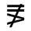
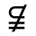

| Version | 1.0 |
| Authors | Barbara Beeton (bnb@ams.org), Asmus Freytag (asmus@unicode.org), Murray Sargent III (murrays@microsoft.com) |
| Date | 2002-05-08 |
| This Version | http://www.unicode.org/unicode/reports/tr25/tr25-5.html |
| Previous Version | http://www.unicode.org/unicode/reports/tr25/tr25-4.html |
| Latest Version | http://www.unicode.org/unicode/reports/tr25 |
| Tracking Number | 5 |
Summary
Starting with version 3.2, Unicode includes virtually all of the standard characters used in mathematics. This set supports a variety of math applications on computers, including document presentation languages like TeX, math markup languages like MathML, computer algebra languages like OpenMath, internal representations of mathematics in systems like Mathematica and MathCAD, computer programs, and plain text. This technical report describes the Unicode mathematics character groups and gives some of their default math properties.
Status
This document has been approved by the Unicode Technical Committee for public review as a Draft Unicode Technical Report. Publication does not imply endorsement by the Unicode Consortium. This is a draft document which may be updated, replaced, or superseded by other documents at any time. This is not a stable document; it is inappropriate to cite this document as other than a work in progress.
Please send comments to the authors. A list of current Unicode Technical Reports is found on http://www.unicode.org/unicode/reports/. For more information about versions of the Unicode Standard, see http://www.unicode.org/unicode/standard/versions/.
The References provide related information that is useful in understanding this document. Please mail corrigenda and other comments to the author(s).
Appendix A: Mathematical Character
Classification
References
Modifications
This technical report starts with a discussion of the mathematics character repertoire incorporating the relevant block descriptions of the Unicode Standard [TUS]. Associated character properties are discussed next, including a number of properties that are not yet part of the Unicode Standard. Character classifications by usage, by typography, and by precedence are given. Some implementation guidelines for input methods and use of Unicode math characters in programming languages are presented next.
Unicode 3.2 provides a quite complete set of standard math characters to support publication of mathematics on and off the web. Specifically, Unicode 3.1 introduced 996 new alphanumeric symbols and Unicode 3.2 introduces 591 new symbols, in addition to the 340 math-specific symbols already encoded in Unicode 3.0, for a total of 1927 mathematical symbols. This repertoire is the result of input from many sources, notably from the STIX Project (Scientific and Technical Information Exchange) [STIX], a cooperation of mathematical publishers. The STIX collection includes, but is not limited to, symbols gleaned from mathematical publications by experts from the American Mathematical Society (AMS) and symbol sets provided by Elsevier Publishing and by the American Physical Society. The new repertoire enables the display of virtually all standard mathematical symbols. Nevertheless this work must remain incomplete; mathematicians and other scientists are continually inventing new mathematical symbols and the plan is to add them as they become accepted in the scientific communities.
Mathematical Markup Language (MathML™) [MathML], an XML application [XML] , is a major beneficiary of the increased repertoire for mathematical symbols and the working group lobbied in favor of the inclusion of the new characters. In addition, the new characters lend themselves to a useful plain text encoding of mathematics (see Sec. 4) that is much more compact than MathML or TEX, the typesetting language and program designed by Donald Knuth [TeX].
The Mathematical Alphanumeric Symbols block (U+1D400 – U+1D7FF) contains a large extension of letterlike symbols used in mathematical notation, typically for variables. The characters in this block are intended for use only in mathematical or technical notation; they are not intended for use in non-technical text. When used with markup languages, for example with MathML the characters are expected to be used directly, instead of indirectly via entity references or by composing them from base letters and style markup.
Words Used as Variables. In some specialties, whole words are used as variables, not just single letters. For these cases, style markup is preferred because in ordinary mathematical notation the juxtaposition of variables generally implies multiplication, not word formation as in ordinary text. Markup not only provides the necessary scoping in these cases, it also allows the use of a more extended alphabet.
Basic Set of Alphanumeric Characters. Mathematical notation uses a basic set of mathematical alphanumeric characters which consists of:
Only unaccented forms of the letters are used for mathematical notation, because general accents such as the acute accent would interfere with common mathematical diacritics. Examples of common mathematical diacritics that can interfere with general accents are the circumflex, macron, or the single or double dot above, the latter two of which are used in physics to denote derivatives with respect to the time variable. Mathematical symbols with diacritics are always represented by combining character sequences, except as required by normalization. See Unicode Standard Annex #15, "Unicode Normalization Forms" [Normalization] for more information.
For some characters in the basic set of Greek characters, two variants of the same character are included. This is because they can appear in the same mathematical document with different meanings, even though they would have the same meaning in Greek text.
Additional Characters. In addition to this basic set, mathematical notation also uses the four Hebrew-derived characters (U+2135 – U+2138). Occasional uses of other alphabetic and numeric characters are known. Examples include U+0428 cyrillic capital letter sha, U+306E hiragana letter no , and Eastern Arabic-Indic digits (U+06F0 – U+06F9). However, these characters are used in only the basic form.
Semantic Distinctions. Mathematics has need for a number of Latin and Greek alphabets that on first thought appear to be mere font variations of one another. For example the letter H can appear as plain or upright (H), bold (H), italic (H), and script H. However in any given document, these characters have distinct, and usually unrelated mathematical semantics. For example, a normal H represents a different variable from a bold H, etc. If these attributes are dropped in plain text, the distinctions are lost and the meaning of the text is altered. Without the distinctions, the well-known Hamiltonian formula:
 ,
,
turns into the integral equation in the variable H:

By encoding a separate set of alphabets, it is possible to preserve such distinctions in plain text.
Mathematical Alphabets. The alphanumeric symbols encountered in mathematics are given in the following table:
Table 2.1 Mathematical Alphabets
|
Math Style |
Characters from Basic Set |
Location |
|
plain (upright, serifed) |
Latin, Greek and digits |
BMP |
|
bold |
Latin, Greek and digits |
Plane 1 |
|
italic |
Latin and Greek |
Plane 1* |
|
bold italic |
Latin and Greek |
Plane 1 |
|
script (calligraphic) |
Latin |
Plane 1* |
|
bold script (calligraphic) |
Latin |
Plane 1 |
|
Fraktur |
Latin |
Plane 1* |
|
bold Fraktur |
Latin |
Plane 1 |
|
double-struck |
Latin and digits |
Plane 1* |
|
sans-serif |
Latin and digits |
Plane 1 |
|
sans-serif bold |
Latin, Greek and digits |
Plane 1 |
|
sans-serif italic |
Latin |
Plane 1 |
|
sans-serif bold italic |
Latin and Greek |
Plane 1 |
|
monospace |
Latin and digits |
Plane 1 |
* Some of these alphabets have characters in the BMP as noted in the following section.
The plain letters have been unified with the existing characters in the Basic Latin and Greek blocks. There are 25 double-struck, italic, Fraktur and script characters that already exist in the Letterlike Symbols block (U+2100 – U+214F). These are explicitly unified with the characters in this block and corresponding holes have been left in the mathematical alphabets.
Compatibility Decompositions. All mathematical alphanumeric symbols have compatibility decompositions to the base Latin and Greek letters—folding away such distinctions, however, is usually not desirable as it loses the semantic distinctions for which these characters were encoded. See Unicode Standard Annex #15, "Unicode Normalization Forms" [Normalization] for more information.
Mathematicians place strict requirements on the specific fonts being used to represent mathematical variables. Readers of a mathematical text need to be able to distinguish single letter variables from each other, even when they do not appear in close proximity. They must be able to recognize the letter itself, whether it is part of the text or is a mathematical variable, and lastly which mathematical alphabet it is from.
Fraktur. The black letter style is often referred to as Fraktur or Gothic in various sources. Technically, Fraktur and Gothic typefaces are distinct designs from black letter, but any of several font styles similar in appearance to the forms shown in the charts can be used.
Math italics. Mathematical variables are most commonly set in a form of italics, but not all italic fonts can be used successfully. In common text fonts, the italic letter v and Greek letter nu are not very distinct. A rounded italic letter v is therefore preferred in a mathematical font. There are other characters, which sometimes have similar shapes and require special attention to avoid ambiguity. Examples are shown in the table below.
Theorems are commonly printed in a text italic font. A font intended for mathematical variables should support clear visual distinctions so that variables can be reliably separated from italic text in a theorem. Some languages have common single letter words (English a, Scandinavian i, etc.), which can otherwise be easily confused with common variables.
Hard-to-distinguish Letters. Not all sans-serif fonts allow an easy distinction between lowercase l, and uppercase I and not all monospaced (fixed width) fonts allow a distinction between the letter l and the digit 1. Such fonts are not usable for mathematics. In Fraktur, the letters I and J in particular must be made distinguishable. Overburdened Black Letter forms like I and J are inappropriate. Similarly, the digit zero must be distinct from the uppercase letter O, and the empty set ∅ must be distinct from the letter o with stroke for all mathematical alphanumeric sets. Some characters are so similar that even mathematical fonts do not attempt to provide distinguished glyphs for them, e.g. uppercase A and uppercase Alpha (A). Their use is normally avoided in mathematical notation unless no confusion is possible in a given context.
Font Support for Combining Diacritics. Mathematical equations require that characters be combined with diacritics (dots, tilde, circumflex, or arrows above are common), as well as followed or preceded by super- or subscripted letters or numbers. This requirement leads to designs for italic styles that are less inclined, and script styles that have smaller overhangs and less slant than equivalent styles commonly used for text such as wedding invitations.
Typestyle for Script Characters. In some instances, a deliberate unification with a non-mathematical symbol has been undertaken; for example, U+2133 is unified with the pre-1949 symbol for the German currency unit Mark and U+2113 is unified with the common non-SI symbol for the liter [SI]. This unification restricts the range of glyphs that can be used for this character in the charts. Therefore the font used for the reference glyphs in the code charts uses a simplified ‘English Script’ style, as per recommendation by the American Mathematical Society. For consistency, other script characters in the Letterlike Symbols block are now shown in the same typestyle.
Double-struck Characters. The double-struck glyphs shown in earlier editions of the standard attempted to match the design used for all the other Latin characters in the standard, which is based on Times. The current set of fonts was prepared in consultation with the American Mathematical Society and leading mathematical publishers, and shows much simpler forms that are derived from the forms written on a blackboard. However, both serifed and non-serifed forms can be used in mathematical texts, and inline fonts are found in works published by certain publishers. There is no intention to support such stylistic preference via character encoding, therefore only one set of double struck mathematical alphanumeric symbols have been encoded.
With Unicode 3.0 and the concurrent second edition of ISO/IEC 10646-1, the reference glyphs for U+03C6 GREEK LETTER SMALL PHI and U+03D5 GREEK PHI SYMBOL were swapped. In ordinary Greek text, the character U+03C6 is used exclusively, although this characters has considerably glyphic variation, sometimes represented with a glyph more like the representative glyph shown for U+03C6 (the "loopy" form) and less often with a glyph more like the representative glyph shown for U+03D5 (the “straight“ form).
For mathematical and technical use, the straight form of the small phi is an important symbol and needs to be consistently distinguishable from the loopy form. The straight form phi glyph is used as the representative glyph for the symbol phi at U+03D5 to satisfy this distinction.
The reversed assignment of representative glyphs in versions of the Unicode Standard prior to Unicode 3.0 had the problem that the character explicitly identified as the mathematical symbol did not have the straight form of the character that is the preferred glyph for that use. Furthermore, it made it unnecessarily difficult for general purpose fonts supporting ordinary Greek text to also add support for Greek letters used as mathematical symbols. This resulted from the fact that many of those fonts already used the loopy form glyph for U+03C6, as preferred for Greek body text; to support the phi symbol as well, they would have had to disrupt glyph choices already optimized for Greek text.
When mapping symbol sets or SGML entities to the Unicode Standard, it is important to make sure that codes or entities that require the straight form of the phi symbol be mapped to U+03D5 and not to U+03C6. Mapping to the latter should be reserved for codes or entities that represent the small phi as used in ordinary Greek text.
Fonts used primarily for Greek text may use either glyph form for U+03C6, but fonts that also intend to support technical use of the Greek letters should use the loopy form to ensure appropriate contrast with the straight form used for U+03D5.
In Unicode 3.2 the reference glyphs for 2278 neither less-than nor greater-than and 2279 neither greater-than nor less-than are changed from using a vertical cancellation to using a slanted cancellation. This change was made in order to match their the long standing canonical decompositions for these characters, which use 0338 Combining long solidus overlay. Irrespective of this change to the reference glyphs, the symmetric forms using the vertical stroke are acceptable glyph variants. Using 2278 or 2279 followed by FE00 Variation Selector-1 (VS1) will request these upright variants explicitly, as will using 2275 or 2276 followed by 20D2 combining long vertical line overlay.
Unless fonts are created with the intention to add support for both forms (via VS1 for the upright forms) there is no need to revise the glyphs for 2287 and 2279 in existing fonts: the glyphic range implied by using the base character alone encompasses both shapes.
Mathematical characters can be located by looking in the blocks that contain such characters or by checking the Unicode MATH property, which is assigned to characters that naturally appear in mathematical contexts (see Section 3 "Mathematical Character Properties"). Mathematical characters can be found in the following blocks:
Table 2.2 Locations of Mathematical Characters
|
Block Name |
Range |
Characters |
|
Basic Latin |
U+0021–U+007E |
Variables, operators, digits* |
|
Greek |
U+0370–U+03FF |
Variables* |
|
General Punctuation |
U+2000–U+206F |
Invisible operators* |
|
Letterlike Symbols |
U+2100–U+214F |
Variables* |
|
Arrows |
U+2190–U+21FF |
Arrows, arrow-like operators |
|
Mathematical Operators |
U+2200–U+22FF |
Operators |
|
Miscellaneous Technical Symbols |
U+2300–U+23FF |
Braces, operators* |
|
Geometrical Shapes |
U+25A0–U+25FF |
Symbols |
|
Misc. Mathematical Symbols-A |
U+27C0–U+27EF |
Symbols and operators |
|
Supplemental Arrows-A |
U+27F0–U+27FF |
Arrows, arrow-like operators |
|
Supplemental Arrows-B |
U+2900–U+297F |
Arrows, arrow-like operators |
|
Misc. Mathematical Symbols-B |
U+2980–U+29FF |
Braces, symbols |
|
Suppl. Mathematical Operators |
U+2A00–U+2AFF |
Operators |
|
Mathematical Alphanumeric Symbols |
U+1D400–U+1D7FF |
Variables and digits |
|
Other blocks |
… |
Characters for occasional use |
*This block contains non-mathematical characters as well.
Some Greek letters are re-encoded as technical symbols. These include U+00B5 µ micro sign, U+2126 Ω ohm sign, and several characters among the APL functional symbols in the Miscellaneous Technical block. U+03A9 greek letter capital omega is the canonical equivalent of U+2126 and its use is preferred. Latin letters duplicated include 212A kelvin sign and U+212B angstrom sign. As in the case of the ohm sign, the corresponding regular Latin letters are the canonical equivalents and therefore their use is preferred.
The left and right angle brackets at U+2328 and U+2329 have long been canonically equivalent with the CJK punctuation characters at U+3008 and U+3009, which implies that the use of the latter code points is preferred and that the characters are ‘wide’ characters. See Unicode Standard Annex #11, "East Asian Width" [EAW]. Unicode 3.2 adds two new mathematical angle bracket characters (U+27E8 and U+27E9) that are unequivocally intended for mathematical use.
Mathematical characters are often enhanced via use of combining marks in the ranges U+0300 – U+036F and the combining marks for symbols in the range U+20D0 – U+20FF. These characters follow the base characters as in non-mathematical Unicode text. This section discusses these characters and preferred ways of representing accented characters in mathematical expressions. If a span of characters is enhanced by a combining mark, e.g., a tilde over AB, typically some kind of higher-level markup is needed as is done in MathML. Unicode does include some combining marks that are designed to be used for pairs of characters, e.g., U+0360 – U+0362. However, their use for mathematical text is not encouraged.
For some mathematical characters there are multiple ways of expressing the character: as precomposed or as a sequence of base character and combining mark. It would be nice to have a single way to represent any given character, since this would simplify recognizing the character in searches and other manipulations. Selecting a unique representation among multiple equivalent representations is called normalization. Unicode Standard Annex #15 "Unicode Normalization Forms" [Normalization] discusses the subject in detail; however, due to requirements of non-mathematical software, the normalization forms presented there are not ideal from the perspective of mathematics.
Ideally, one always uses the shortest form of a math operator symbol wherever possible. So U+2260 should be used for the not equal sign instead of the combining sequence U+003D U+0338. This rule concurs with Normalization Form C (NFC) used on the web. If a negated operator is needed that does not have a precomposed form, the character U+0338 combining long solidus overlay can be used to indicate negation.
On the other hand, for accented alphabetic characters used as variables, ideally only decomposed sequences are used since there are no precomposed math alphanumerical symbols.
Mathematics uses a multitude of combining marks that greatly exceeds the predefined composed characters in Unicode. Accordingly, it is better to have the math display facility handle all of these cases uniformly to give a consistent look between characters that happen to have a fully composed Unicode character and those that do not. The combining character sequences also typically have semantics as a group, so it is handy to be able to manipulate and search for them individually without having to have special tables to decompose characters for this purpose. Note that this approach does not concur with Normalization Form C for the upright alphabetic characters (ASCII letters). To facilitate interchange on the web, accented characters should conform to NFC when interchanged.
However, to achieve consistent results, a mathematical display system should transiently decompose such letters when used in mathematical expressions and use a single algorithm to place embellishments.
The Unicode blocks U+2200 – U+22FF and U+2A00 – U+2AFF contain many mathematical operators, relations, geometric symbols and other symbols with special usages confined largely to mathematical contexts. In addition to the characters in these blocks, mathematical operators are also found in the Basic Latin (ASCII) and Latin-1 Supplement Blocks. A few of the symbols from the Miscellaneous Technical block and characters from General Punctuation are also used in mathematical notation.
Semantics. Mathematical operators often have more than one meaning different subdisciplines or different contexts. For example, the "+" symbol normally denotes addition in a mathematical context, but might refer to concatenation in a computer science context dealing with strings, or incrementation, or have any number of other functions in given contexts. Therefore The Unicode Standard only encodes a single character for a single symbolic form. There are numerous other instances in which several semantic values can be attributed to the same Unicode value. For example, U+2218 ring operator may be the equivalent of white small circle or composite function or apl jot. The Unicode Standard does not attempt to distinguish all possible semantic values that may be applied to mathematical operators or relational symbols. It is up to the application or user to distinguish such meanings according to the appropriate context. Where information is available about the usage (or usages) of particular symbols, it has been indicated in the character annotations in Chapter 14, Code Charts in The Unicode Standard, Version 3.0 [TUS] and in the online code charts [Charts].
Similar glyphs. The Standard does include many characters that appear to be quite similar to one another, but that may well convey different meaning in a given context. On the other hand, mathematical operators, and especially relation symbols, may appear in various standards, handbooks, and fonts with a large number of purely graphical variants. Where variants were recognizable as such from the sources, they were not encoded separately.
For relation symbols, the choice of a vertical or forward-slanting stroke typically seems to be an aesthetic one, but both slants might appear in a given context. However, a back-slanted stroke almost always has a distinct meaning compared to the forward-slanted stroke. See Section 2.17 "Variation Selector" for more information on some particular variants.
Unifications. Mathematical operators such as implies⇔ and if and only if ↔ have been unified with the corresponding arrows (U+21D2 rightwards double arrow and U+2194 left right arrow, respectively) in the Arrows block.
The operator U+2208 element of is occasionally rendered with a taller shape than shown in the code charts. Mathematical handbooks and standards consulted treat these characters as variants of the same glyph. U+220A small element of is a distinctively small version of the element of that originates in mathematical pi fonts.
The operators U+226B much greater-than and U+226A much less-than are sometimes rendered in a nested shape. Because no semantic distinction applies, the Unicode Standard provides a single encoding for each operator.
A large class of unifications applies to variants of relation symbols involving equality, similarity, and/or negation. Variants involving one- or two-barred equal signs, one- or two-tilde similarity signs, and vertical or slanted negation slashes and negation slashes of different lengths are not separately encoded. Thus, for example, U+2288 neither a subset of nor equal to, is the archetype for at least six different glyph variants noted in various collections.
In two instances, essentially stylistic variants are separately encoded: U+2265 greater-than or equal to is distinguished from U+2267 greater-than over equal to; the same distinction applies to U+2264 less-than or equal to and U+2266 less-than over equal to. This exception to the general rule regarding variation results from requirements for character mapping to some Asian standards that distinguish the two forms.
Several mathematical operators derived from Greek characters have been given separate encodings since they are used differently than the corresponding letters. These operators may occasionally occur in context with Greek-letter variables. They include U+2206 increment, U+220F n-ary product, and U+2211 n-ary summation. The latter two are large operators that take limits. Some typographical aspects of operators are discussed in Section 3.2 "Classification by Typographical Behavior". For example, the n-ary operators are distinguished from letter variables by their larger size and the fact that they take limit expressions.
The unary and binary minus sign is preferably represented by U+2212 minus sign rather than by the ASCII-derived U+002D hyphen-minus, both because the former is unambiguous and because it is rendered with a more desirable length. (For a complete list of dashes in the Unicode Standard, see Table 6-2 in [TUS]).
Miscellaneous Symbols. U+22EE – U+22F1 are a set of ellipses used in matrix notation.
The Unicode block U+2070 – U+209F plus U+00B2, U+00B3, and U+00B9 contain sequences of superscript and subscript digits and punctuation that can be useful in mathematics. If they are used, it is recommended that they be displayed with the same font size as other subscripts and superscripts at the corresponding nested script level. For example, a² and a<super>2</super> should be displayed the same. However, these subscript/superscript characters are not used in MathML or TEX and their use with XML documents is discouraged, see Unicode Technical Report #20, "Unicode in XML and other Markup Languages" [UXML].
Arrows are used for a variety of purposes in mathematics and elsewhere, such as to imply directional relation, to show logical derivation or implication, and to represent the cursor control keys. Accordingly Unicode includes a fairly extensive set of arrows (U+2190 – U+21FF and U+2900 – U+297F), many of which appear in mathematics. It does not attempt to encode every possible stylistic variant of arrows separately, especially where their use is mainly decorative. For most arrow variants, the Unicode Standard provides encodings in the two horizontal directions, often in the four cardinal directions. For the single and double arrows, the Unicode Standard provides encodings in eight directions.
Unifications. Arrows expressing mathematical relations have been encoded in the arrows block as well as in Supplemental Arrows-A and Supplemental Arrows-B. An example is U+21D2 rightwards double arrow, which may be used to denote implies. Where available, such usage information is indicated in the annotations to individual characters in the Unicode Standard, Chapter 14, Code Charts.
Long Arrows. The long arrows encoded in the range U+27F5..U+27FF map to standard SGML entity sets supported by MathML. Long arrows represent distinct semantics from their short counterparts, rather than mere stylistic glyph differences. For example, the shorter forms of arrows are often used in connection with limits, whereas the longer ones are associated with mappings. The use of the long arrows is so common that they were assigned entity names in the ISOAMSA entity set, one of the suite of mathematical symbol entity sets covered by the Unicode Standard.
The basic geometric shapes (circle, square, triangle, diamond, and lozenge) are used for a variety of purposes in mathematical texts. Because their shapes are distinct and they are easily available in multiple sizes from a variety of widely available fonts, they are also often used in an ad-hoc manner.
Ideal sizes. Mathematical usage requires at least four distinct sizes of simple shapes, and sometimes more. The size gradation must allow each size to be recognized, even when it occurs in isolation. In other words shapes of the same size should ideally have roughly the same visual "impact" as opposed to same nominal height or width. For mathematical usage simple shapes ideally share a common center. The following diagram shows which size relationship across shapes of the same nominal size is considered ideal.

Please note that neither the current set of glyphs in the standard nor the glyphs from many commonly available non-mathematical fonts show this kind of size relation.
Actual sizes. The sizes of existing characters and their names are not always consistent. For mathematical usage, therefore, the MEDIUM SMALL SQUARE should be used together with the MEDIUM size of the other basic shapes, and correspondingly for the other sizes. (The basic shapes from the Zapf Dingbats font match the unmarked size for triangle, diamond and circle and the MEDIUM size for the square.) To achieve the correct size relation, mathematical fonts may need to deviate in minor amounts from the sizes shown in the character charts. [ED: TBD: summary picture]
Sizes of derived shapes. Circled and squared operators and similar derived shapes are more constrained in their usage than "plain" geometric shapes. They tend to occur in two generic sizes based on function: a smaller size for operators and large size for n-ary operators.
Positioning. For a mathematical font, the centerline should go through the middle of a parenthesis, which should go from bottom of descender to top of ascender. This is the same level as the minus or the middle of the plus and equal signs. For correct positioning, the glyph will descend below the baseline for the larger sizes of the basic shapes as in the following schematic diagram:
The standard triangles used for mathematics are also center aligned. This is different from the positioning for the reference glyphs of existing characters shown in the charts. Mathematical fonts may need to deviate in positioning of these triangles.
Other symbols of use in mathematics are contained in the Miscellaneous Technical block (U+2300 – U+23FF), the Geometric Shapes block (U+25A0 – U+25FF), the Miscellaneous Symbols block (U+2600 – U+267F), and the General Punctuation block (U+2000 – U+206F).
Generally any easily recognized and distinct symbol is fair game for mathematicians faced with the need of creating notations for new fields of mathematics. For example, the card suits, ♥, ♠, etc. can be found as operators as well as subscripts.
The characters from the Miscellaneous Technical block in the range U+239B – U+23B3, plus U+23B7, comprise a set of bracket and other symbol fragments for use in mathematical typesetting. These pieces originated in older font standards, but have been used in past mathematical processing as characters in their own right to make up extra-tall glyphs for enclosing multi-line mathematical formulae. Mathematical fences are ordinarily sized to the content that they enclose. However, in creating a large fence, the glyph is not scaled proportionally; in particular the displayed stem weights must remain compatible with the accompanying smaller characters. Thus, simple scaling of font outlines cannot be used to create tall brackets. Instead, a common technique is to build up the symbol from pieces. In particular, the characters U+239B LEFT PARENTHESIS UPPER HOOK through U+23B3 SUMMATION BOTTOM represent a set of glyph pieces for building up large versions of the fences (, ), [, ], {, and }, and of the large operators ∑ and ∫. These brace and operator pieces are compatibility characters. They should not be used in stored mathematical text, but are often used in the data stream created by display and print drivers.
The following table shows which pieces are intended to be used together to create specific symbols.
Table 2.3 Use of Symbol Pieces
|
|
2-row |
3-row |
5-row |
|
Summation |
23B2, 23B3 |
|
|
|
Integral |
2320, 2321 |
2320, 23AE, 2321 |
2320, 3×23AE, 2321 |
|
Left Parenthesis |
239B, 239D |
239B, 239D |
239B, 3×239C, 239D |
|
Right Parenthesis |
239E, 23A0 |
239E, 239F, 23A0 |
239E, 3×239F, 23A0 |
|
Left Bracket |
23A1, 23A3 |
23A1, 23A2, 23A4 |
23A1, 3×23A2, 23A3 |
|
Right Bracket |
23A4, 23A6 |
23A4, 23A5, 23A6 |
23A4, 3×23A5, 23A6 |
|
Left Brace |
23B0, 23B1 |
23A7, 23A8, 2389 |
23A7, 23AA, 23A8, 23AA, 2389 |
|
Right Brace |
23B1, 23B0 |
23AB, 23AC, 23AD |
23AB, 23AA, 23AC, 23AA, 23AD |
For example, an instance of U+239B can be positioned relative to instances of U+239C and U+239D to form an extra-tall (three or more line) left-parenthesis. The center sections encoded here are meant to be used only with the top and bottom pieces encoded adjacent to them, since the segments are usually graphically constructed within the fonts so that they match perfectly when positioned at the same x coordinates.
In mathematics some operators or punctuation are often implied, but not displayed. U+2063 invisible separator or invisible comma is intended for use in index expressions and other mathematical notation where two adjacent variables form a list and are not implicitly multiplied. In mathematical notation, commas are not always explicitly present, but need to be indicated for symbolic calculation software to help it disambiguate a sequence from a multiplication. For example, the double ij subscript in the variable aij means ai, j — that is, the i and j are separate indices and not a single variable with the name ij or even the product of i and j. Accordingly to represent the implied list separation in the subscript ij one can insert a non-displaying invisible separator between the i and the j. In addition, use of the invisible comma would hint to a math layout program to typeset a small space between the variables.
Similarly an expression like mc2 implies that the mass m multiplies the square of the speed c. To represent the implied multiplication in mc2, one inserts a non-displaying U+2061invisible times between the m and the c. A related case is the use of U+2062 function application for an implied function dependence as in f(x + y). To indicate that this is the function f of the quantity x + y and not the expression fx + fy, one can insert the non-displaying function application symbol between the f and the left parenthesis.
Another example is the expression fi j(cos(ab)), which means the same as fi,j(cos(a×b)), where × represents multiplication, not the cross product. Note that the spacing between characters may also depend on whether the adjacent variables are part of a list or are to be concatenated, that is, multiplied.
These include all remaining Unicode characters. They may appear in mathematical expressions, typically in spelled-out names for variables in fractions or simple formulae, but they most commonly appear in ordinary text. An English example is the equation
distance = rate × time,
which uses ordinary ASCII letters to aid in recognizing sequences of letters as words instead of products of individual symbols. Such usage corresponds to identifiers, discussed elsewhere.
Many negated forms, particularly of relations, can be encoded by using the base symbol, together with a combining overlay. Occasionally, both a vertical and a slanted negation are used, which one is often a matter of style. Sometimes the negation is only indicated for part of a symbol. In these cases, the negated relations are encoded directly, and variants can be accessed via the variation selector method described in the next section.
The following table lists variants of negated mathematical symbols that can be realized via composition, by using U+20D2 COMBINING LOng VERTICAL LINE OVERLAY for negation instead of the slanted U+0338 combining LONG solidus overlay. This contrasts to the use of U+FE00 VARIATION SELECTOR-1 for those symbols for which only a partial vertical stroke is used, and for which the use of U+20D2 would not give the intended result. The part of the description in SMALL CAPS is the character name of the corresponding standard character, with the part in lower case indicating the variation in appearance.
Table 2.4 Negated relations using vertical line overlay
| Std Symbol | Alternate Symbol | Description | ||
| 2209 | 2208,20D2 | NOT AN ELEMENT OF with vertical stroke | ||
| 220C | 220B,20D2 | DOES NOT CONTAIN AS MEMBER with vertical stroke | ||
| 2241 | 223C,20D2 | NOT TILDE with vertical stroke | ||
| 2244 | 2243,20D2 | NOT ASYMPTOTICALLY EQUAL TO with vertical stroke | ||
| 2247 | 2245,20D2 | NEITHER APPROXIMATELY NOR ACTUALLY EQUAL TO with vertical stroke | ||
| 2249 | 2248,20D2 | NOT ALMOST EQUAL TO with vertical stroke | ||
| 2260 | 003D,20D2 | NOT EQUAL TO with vertical stroke | ||
| 2262 | 2261,20D2 | NOT IDENTICAL TO with vertical stroke | ||
| 226D | 224D,20D2 | NOT EQUIVALENT TO with vertical stroke | ||
| 226E | 003C,20D2 | NOT LESS-THAN with vertical stroke | ||
| 226F | 003E,20D2 | NOT GREATER-THAN with vertical stroke | ||
| 2270 | 2264,20D2 | NEITHER LESS-THAN NOR EQUAL TO with vertical stroke | ||
| 2271 | 2265,20D2 | NEITHER GREATER-THAN NOR EQUAL TO with vertical stroke | ||
| 2280 | 227A,20D2 | DOES NOT PRECEDE with vertical stroke | ||
| 2281 | 227B,20D2 | DOES NOT SUCCEED with vertical stroke | ||
| 2284 | 2282,20D2 | NOT A SUBSET OF with vertical stroke | ||
| 2285 | 2283,20D2 | NOT A SUPERSET OF with vertical stroke | ||
| 2288 | 2286,20D2 | NEITHER A SUBSET OF NOR EQUAL TO with vertical stroke | ||
| 2289 | 2287,20D2 | NEITHER A SUPERSET OF NOR EQUAL TO with vertical stroke | ||
| 22E0 | 227C,20D2 | DOES NOT PRECEDE OR EQUAL with vertical stroke | ||
| 22E1 | 227D,20D2 | DOES NOT SUCCEED OR EQUAL with vertical stroke | ||
The following table lists negated forms of mathematical relations that can only be encoded by using U+0338 COMBINING LONG SOLIDUS OVERLAY or U+20D2 COMBINING LONG VERTICAL LINE OVERLAY. The part of the description that is in SMALL CAPS reflects the Unicode character name of the non-negated symbol. Since these are not glyph variants of existing characters, the word "negated" is used instead of "NOT" as in the list above, to indicate that the negation is expressed by the combining character sequence, and not inherent in the character.
Table 2.5 Using vertical line or solidus overlay
| Glyph / Sequence | Description | |
| 220A,0338 | negated SMALL ELEMENT OF | |
| 220A,20D2 | negated SMALL ELEMENT OF with vertical stroke | |
| 220D,0338 | negated SMALL CONTAINS AS MEMBER | |
| 220D,20D2 | negated SMALL CONTAINS AS MEMBER with vertical stroke | |
| 2242,0338 | negated MINUS TILDE | |
| 2242,20D2 | negated MINUS TILDE with vertical stroke | |
| 2263,0338 | negated STRICTLY EQUIVALENT TO | |
| 2263,20D2 | negated STRICTLY EQUIVALENT TO with vertical stroke | |
| 2266,0338 | negated LESS-THAN OVER EQUAL TO | |
| 2266,20D2 | negated LESS-THAN OVER EQUAL TO with vertical stroke | |
| 2267,0338 | negated GREATER-THAN OVER EQUAL TO | |
| 2267,20D2 | negated GREATER-THAN OVER EQUAL TO with vertical stroke | |
| 22F7,0338 | negated ELEMENT OF WITH OVERBAR | |
| 22F7,20D2 | negated ELEMENT OF WITH OVERBAR with vertical stroke | |
| 22FE,0338 | negated SMALL CONTAINS WITH OVERBAR | |
| 22FE,20D2 | negated SMALL CONTAINS WITH OVERBAR EQUALS with vertical stroke | |
| 2A6C,20D2 | negated SIMILAR MINUS SIMILAR | |
| 2A6C,0338 | negated SIMILAR MINUS SIMILAR with vertical stroke | |
| 2A70,0338 | negated APPROXIMATELY EQUAL OR EQUAL TO | |
| 2A70,20D2 | negated APPROXIMATELY EQUAL OR EQUAL TO with vertical stroke | |
| 2A7D,0338 | negated LESS-THAN OR SLANTED EQUAL TO | |
| 2A7D,20D2 | negated LESS-THAN OR SLANTED EQUAL TO with vertical stroke | |
| 2A7E,0338 | negated GREATER-THAN OR SLANTED EQUAL TO | |
| 2A7E,20D2 | negated GREATER-THAN OR SLANTED EQUAL TO with vertical stroke | |
| 2A95,0338 | negated SLANTED EQUAL TO OR LESS-THAN | |
| 2A95,20D2 | negated SLANTED EQUAL TO OR LESS-THAN with vertical stroke | |
| 2A96,0338 | negated SLANTED EQUAL TO OR GREATER-THAN | |
| 2A96,20D2 | negated SLANTED EQUAL TO OR GREATER-THAN with vertical stroke | |
| 2A99,0338 | negated DOUBLE-LINE EQUAL TO OR LESS-THAN | |
| 2A99,20D2 | negated DOUBLE-LINE EQUAL TO OR LESS-THAN with vertical stroke | |
|  | 2A9A,0338 | negated DOUBLE-LINE EQUAL TO OR GREATER-THAN |
| 2A9A,20D2 | negated DOUBLE-LINE EQUAL TO OR GREATER-THAN with vertical stroke | |
|  | 2AC5,0338 | negated SUBSET OF ABOVE EQUALS SIGN |
| 2AC5,20D2 | negated SUBSET OF ABOVE EQUALS SIGN with vertical stroke | |
| 2AC6,0338 | negated SUPERSET OF ABOVE EQUALS SIGN | |
| 2AC6,20D2 | negated SUPERSET OF ABOVE EQUALS SIGN with vertical stroke | |
The variation selector VS1 is used to represent well-defined variants of particular math symbols. The variations include: different slope of cancellation element in some negated symbols, changed orientation of an equating or tilde operator element, and some well-defined different shapes. These mathematical variants are all produced with the addition of Variation Selector 1 (VS1 or U+FE00) to mathematical operator base characters. To select one of the predefined variations, follow the base character with the variation selector. Only the valid, recognized combinations are listed in the table of standardized variants. All combinations not listed here are unspecified and are reserved for future standardization; no conformant process may interpret them as standardized variants. For more information, see Section 13.7, Variation Selectors, in Unicode 3.2 [U3.2].
Using a variation selector allows users and font designers to make a distinction between alternate glyphs shapes both of which are ordinarily acceptable glyphs for generic, non-distinguishing usage of the standalone character code. This situation is somewhat analogous to the variants of Greek letterforms used as symbols. See Section 2.31, "Reference Glyphs for Greek phi".
It is important to further note that the variation selector only selects a different appearance of an already encoded character. It is not intended as a general code extension mechanism. At this time the variations encoded with the variation selector are thought to be primarily glyphic variations. Should their usage or interpretation change—over time, or because of better evidence about how these shapes are actually used in mathematical notation—it is likely that another character would be coded so that the distinction in meaning can be kept directly in the character code.
In extremis, the Unicode Standard considers the variation selector somewhat optional. Processes or fonts that cannot support it should yield acceptable results by ignoring the variation selector.
Table 2.6 Variants of Mathematical Symbols using VS1
|
2268 + VS1 |
LESS-THAN BUT NOT EQUAL TO - with vertical stroke |
|
2269 + VS1 |
GREATER-THAN BUT NOT EQUAL TO - with vertical stroke |
|
22DA + VS1 |
LESS-THAN slanted EQUAL TO OR GREATER-THAN |
|
22DB + VS1 |
GREATER-THAN slanted EQUAL TO OR LESS-THAN |
|
2272 + VS1 |
LESS-THAN OR EQUIVALENT TO - following the slant of the lower leg |
|
2273 + VS1 |
GREATER-THAN OR EQUIVALENT TO - following the slant of the lower leg |
|
2A9D + VS1 |
SIMILAR OR LESS-THAN - following the slant of the upper leg - or less-than |
|
2A9E + VS1 |
SIMILAR OR GREATER-THAN - following the slant of the upper leg - or greater-than |
|
2AAC + VS1 |
SMALLER THAN OR slanted EQUAL |
|
2AAD + VS1 |
LARGER THAN OR slanted EQUAL |
|
228A + VS1 |
SUBSET OF WITH NOT EQUAL TO - variant with stroke through bottom members |
|
228B + VS1 |
SUPERSET OF WITH NOT EQUAL TO - variant with stroke through bottom members |
|
2ACB + VS1 |
SUBSET OF ABOVE NOT EQUAL TO - variant with stroke through bottom members |
|
2ACC + VS1 |
SUPERSET OF ABOVE NOT EQUAL TO - variant with stroke through bottom members |
|
2A3B + VS1 |
INTERIOR PRODUCT - tall variant with narrow foot |
|
2A3C + VS1 |
RIGHTHAND INTERIOR PRODUCT - tall variant with narrow foot |
| 2278 + VS1 | NEITHER LESS-THAN NOR GREATER-THAN with vertical stroke (*) |
| 2279 + VS1 | NEITHER GREATER-THAN NOR LESS-THAN with vertical stroke (*) |
|
2295 + VS1 |
CIRCLED PLUS with white rim |
|
2297 + VS1 |
CIRCLED TIMES with white rim |
|
229C + VS1 |
CIRCLED EQUALS - equal sign inside and touching the circle |
|
2225 + VS1 |
Slanted PARALLEL TO |
|
2225 + VS1 + 20E5 |
Slanted PARALLEL TO with reverse slash |
|
2229 + VS1 |
INTERSECTION with serifs |
|
222A + VS1 |
UNION with serifs |
|
2293 + VS1 |
SQUARE CAP with serifs |
|
2294 + VS1 |
SQUARE CUP with serifs |
* The reference glyphs shown in the code charts [Charts] have been revised to show the slanted forms - this matches their existing decomposition using U+0338 combining long solidus overlay (see section 2.32 for more information).
Mathematicians are by their nature inventive people and will continue to invent new symbols to express their concepts. Until these symbols are used by a number of people, they should not be standardized. Nevertheless, one needs a way to handle these novel symbols even before they are standardized.
The Private Use Area (U+E000 – U+F8FF) can be used for such nonstandard symbols. It is a tricky business, since the Private Use Area (PUA) is used for many purposes. Hence when using the PUA, it is a good idea to have higher-level backup to define what kind of characters are involved. If they are used as math symbols, it would be good to assign them a math attribute that is maintained in a rich-text layer parallel to the plain text.
Unicode assigns a number of mathematical character properties to aid in the default interpretation and rendering of these characters. Such properties include the classification of characters into operator, digit, delimiter, and variable. These properties may be overridden, or explicitly specified in some environments, such as MathML [MathML], which uses specific tags to indicate how Unicode characters are used, such as <mo> for operator, <md> for one or more digits comprising a number, and <mi> for identifier. TeX [TeX] is a higher-level composition system that uses implicit character semantics. In the following, these properties are described in greater detail.
In particular, many Unicode characters nearly always appear in mathematical expressions and are given the generic mathematics property. For example, they include the math operators in the ranges U+2200 – U+22FF and U+29B0 – U+2AFF, the math combining marks U+20D0 – U+20FF, the math alphanumeric characters (some of the Letterlike Symbols and the mathematics alphanumerics range U+1D400 – U+1D7FF). Other characters may occur in mathematical usage depending on context. The math property is useful in heuristics that seek to identify mathematical expressions in plain text.
[ED: This classification is a work in progress.]
Strong mathematical characters are all characters that are primarily used for mathematical notation. This includes all characters with the math property [Sec. 4.9 of The Unicode Standard] [ED: Check that this is true after extension of the properties to the new characters.] with the following exceptions:
002D HYPHEN-MINUS
and the following additions [ED: any?]
These characters often appear in mathematical expressions, but they also appear naturally in ordinary text. They include the ASCII letters, punctuation, as well as the arrows and many of the geometric and technical shapes. The ASCII hyphen minus (U+002D) is a weakly mathematical character that may be used for the subtraction operator, but U+2212 is preferred for this purpose and looks better. Geometric shapes are frequently used as mathematical operators.
All other Unicode characters. Many of these may occur in mathematical texts, though often not as part of the mathematical expressions themselves.
Math characters fall into a number of subcategories, such as operators, digits, delimiters, and identifiers (constants and variables). This section discusses some of the typographical characteristics of these subcategories. These characteristics and classifications are useful in the absence of overriding information. For example, there is at least one document that uses the letter P as a relational operator.
In general italic Latin characters are used to represent single-character Latin variables. In contrast, mathematical function names like sin, cos, tan, tanh, etc., are represented by upright serifed text to distinguish them from products of variables. Such names should not use the math alphanumeric characters. The upright uppercase Greek are favored over the italic ones. In Europe, upright d, D, e, and i are used for the two differential, exponential, and imaginary part functionalities, respectively. In common American mathematical practice, these quantities are represented by italic quantities. Products of italicized variables have slightly wider spacing than the letters in italicized words in ordinary text.
Operators fall into one or more categories. These include:
Table 3.1 Some 0perator Categories
| Category | Notes |
| binary | some spacing around binary operators |
| unary | closer to modified character than binary operators |
| n-ary | often called "large" operators, take limits ordinarily above/below when displayed out-of-line and right top/bottom when displayed in-line |
| arithmetic | arithmetic includes binary and unary operators |
| logical | unary not and binary and, or, exclusive or in a host of guises |
| set-theoretic | inclusion, exclusion, in a variety of guises |
| relational | binary operators like less/greater than in many forms |
These include n-ary operators like summation and integration. These may expand in size to fit their associated expressions. They generally also take limits. The placement of the limits on an operator is different when it is used in-line compared to its use in displayed formulae. For example versus .
Specifying a particular layout for limit expressions is outside the scope of the Unicode Standard.
Digits include 0-9 in various styles. All digits of a particular style have the same width.
Delimiters include punctuation, opening/closing delimiters such as parentheses and brackets, braces, and fences. Opening and closing delimiters and fences may expand in size to fit their associated expressions. Some bracket expressions do not appear to be "logical" to readers unfamiliar with the notation, e.g., ]x,y[.
Fences are similar to opening and closing delimiters, but are not paired.
Combining marks are used with mathematical alphabetic characters (see Section 2.6 "Accented Characters"), instead of precomposed characters. Use U+0061 U+0308 for the second derivative of acceleration with respect to time, not the precomposed letter ä. On the other hand, precomposed characters are used for operators whenever they exist. Combining slash (solidus) or vertical overlays can be used to indicate negation for operators that do not have precomposed negated forms.
Where both long and short combining marks exist, use the long, e.g., use U+0338, not U+0337 and use U+20D2, not U+20D3. The actual shape or position of a combining mark is a typesetting problem and not specified in plain text. When using combining marks, the composite characters have the same typesetting class as the base character.
Operator precedence reduces the notational complexity of expressions and is commonly used for this purpose in computer programming languages, calculus, and algebra. Assigning consistent default precedence to the operators allows software to autmoate the transition from data input (or plain text) to fully marked up forms of mathematical data such as TeX or MATHML.
Operands in subscripts, superscripts, fractions, roots, boxes, etc. are defined in part in terms of operators and operator precedence. While such notions are very familiar to mathematically oriented people, some of the symbols that are defined here as operators might surprise one at first. Most notably, the character SPACE is an important operator when interpreting mathematical text encoded in plain text.
Table A.1 A list of common operators ordered by precedence
| Operators By Precedence |
|
FF CR \ |
|
( [ { |
|
) ] } | |
|
Space " . , = - + LF Tab |
|
/ * × · • · ½ |
|
n √ |
|
∫ ∑ ∏ |
|
↓ ↑ |
Here Tab = U+0009, LF = U+000A, FF = U+000C, and CR = U+000D.
As in arithmetic, operators have precedence, which streamlines the interpretation of operands. The operators are grouped above in order of increasing precedence, with equal precedence values on the same line. For example, in arithmetic, 3+1/2 = 3.5, not 2. Similarly the plain-text expression α+ β/γ means
not .
As in arithmetic, precedence can be overruled by explicit delimitation, so (α+ β)/γ gives the latter.
The following gives a list of the syntax for a variety of mathematical constructs.
| exp1/exp2 | Create a built-up fraction with numerator exp1and denominator exp2. Numerator and denominator expressions are terminated by operators such as / *] ) ↑↓ · and blank (can be overruled by enclosing in parentheses). The "/" is given by U+2044. |
| ↑exp1 | Superscript expression exp1. The
superscripts 0 - 9 + - ( ) exist as Unicode symbols.
Sub/superscripts expressions are terminated by / * ] ) ↑↓
· and blank. Sub/superscript operators associate right to left. |
| ↓exp1 | Subscript expression exp1. The subscripts 0 - 9 + - ( ) exist as Unicode symbols. |
| [exp1] | Surround exp1 with built-up brackets. Similarly for { } and ( ). |
| [exp1]↑exp2 | Surround exp1 with built-up brackets
followed by superscripted exp2 (moved up high enough). Similarly for { } and ( ). |
| √exp1 | Square root of exp1. |
| · | Small raised dot that is not intended to print. It is used to terminate an operand, such as in a subscript, superscript, numerator, or denominator, when other operators cannot be used for this purpose. Similar raised dots like • and · also terminate operands, but they are intended to print. |
| ∑↓exp1↑exp2 | Summation from exp1 to exp2. ↓exp1 and ↑exp2 are optional. |
| ∏↑exp1↑exp2 | Product from exp1to exp2. |
| ∫↑exp1↑exp2 | Integral from exp1 to exp2. |
| exp1½exp2 | Align exp1 over exp2 (like fraction without bar). Useful for building up matrices as a set of columns. |
Diacritics are handled using Unicode combining marks (U+0300 – U+036F, U+20D0 – U+20FF). Note that many more operators can be added to fill out the capabilities of the approach in representing mathematical expressions in Unicode plain (or almost plain) text.
If Normalization Form C is applied to mathematical text, some accents or overlays used with BMP alphabetic characters may be incorrectly composed with their base character. Parsers should allow for this. Normalization forms KC or KD remove the distinction between different mathematical alphabets. These forms cannot be used with mathematical texts. For more details on Normalization see Unicode Standard Annex #15, "Unicode Normalization Forms" [Normalization] and the discussion in Section 2.6 "Accented Characters".
In view of the large number of characters used in mathematics, it is useful to give some discussion of input methods. The ASCII math symbols are easy to find, e.g., + - / * [ ] ( ) { }, but often need to be used as themselves.
Post-entry correction. From a syntax point of view, the official Unicode minus sign (U+2212) is certainly preferable to the ASCII hyphen-minus (U+002D) and the prime (U+2032) is preferable to the ASCII apostrophe (U+0027), but users may locate the ASCII characters more easily. Similarly it is easier to type ASCII letters than italic letters, but when used as mathematical variables, such letters are traditionally italicized in print. Accordingly a user might want to make italic the default alphabet in a math context, reserving the right to overrule this default when necessary. Other post-entry enhancements include automatic-ligature and left-right quote substitutions, which can be done automatically by some word processors. Suffice it to say that intelligent input algorithms can dramatically simplify the entry of mathematical symbols.
Math keyboards. A special math shift facility for keyboard entry could bring up proper math symbols. The values chosen can be displayed on an on-screen keyboard. For example, the left Alt key could access the most common mathematical characters and Greek letters, the right Alt key could access italic characters plus a variety of arrows, and the right Ctrl key could access script characters and other mathematical symbols. The numeric keypad offers locations for a variety of symbols, such as sub/superscript digits using the left Alt key. Left Alt CapsLock could lock into the left-Alt symbol set, etc. This approach yields what one might call a "sticky" shift. Other possibilities involve the NumLock and ScrollLock keys in combinations with the left/right Ctrl/Alt keys. Pretty soon one realizes that this approach rapidly approaches literally billions of combinations, that is, several orders of magnitude more than Unicode can handle!
Macros. The autocorrect and keyboard macro features of some word processing systems provide other ways of entering mathematical characters for people familiar with TeX. For example, typing \alpha inserts α if the appropriate autocorrect entry is present. This approach is noticeably faster than using menus.
Hexadecimal input. A handy hex-to-Unicode entry method works with recent Microsoft text software (similar approaches are available on other systems) to insert Unicode characters in general and math characters in particular. Basically one types a character’s hexadecimal code (in ASCII), making corrections as need be, and then types Alt+x. The hexadecimal code is replaced by the corresponding Unicode character. The Alt+x can be a toggle, that is, type it once to convert a hex code to a character and type it again to convert the character back to a hex code. If the hex code is preceded by one or more hexadecimal digits, one needs to "select" the code so that the preceding hexadecimal characters aren’t included in the code. The code can range up to the value 0x10FFFF, which is the highest character in the 17 planes of Unicode.
Pull-down menus. Pull-down menus are a popular method for handling large character sets, but they are slow. A better approach is the symbol box, which is an array of symbols either chosen by the user or displaying the characters in a font. Symbols in symbol boxes can be dragged and dropped onto key combinations on the on-screen keyboard(s), or directly into applications. On-screen keyboards and symbol boxes are valuable for entry of mathematical expressions and of Unicode text in general.
Unicode plain-text mathematics. One use of the plain-text format is as a math input method, both for search text and for general editing.
It can be very useful to have typical mathematical symbols available in computer programs (see Section A.3 "Using Plain-Text Mathematics in Programming Languages" for a more detailed discussion). A key point is that the compiler should display the desired characters in both edit and debug windows. A preprocessor can translate MathML, for example, into C++, but it will not be able to make the debug windows use the math-oriented characters unless it can handle the underlying Unicode characters. Java has made an important step in this direction by allowing Unicode variable names. The mathematical alphanumeric symbols allow this approach to go further with relatively little effort for compilers.
The advantages of using the Unicode plain text in computer programs are at least threefold: 1) many formulas in document files can be programmed simply by copying them into a program file and inserting appropriate multiplication dots. This dramatically reduces coding time and errors. 2) The use of the same notation in programs and the associated journal articles and books leads to an unprecedented level of self-documentation. 3) In addition to providing useful tools for the present, these proposed initial steps should help one figure out how to accomplish the ultimate goal of teaching computers to understand and use arbitrary mathematical expressions.
It is possible to use a number of heuristics for identifying mathematical expressions and treating them accordingly, for example to tag expressions input as plain text with a rich-text math style. Such heuristics are not foolproof, but they lead to the most popular choices. Ultimately the approach could be used in post-entry correction . The user could then override cases that were tagged incorrectly. A math style would connect in a straightforward way to appropriate MathML tags.
The basic idea is that math characters identify themselves as such and potentially identify their surrounding characters as math characters as well. For example, the fraction (U+2044) and ASCII slashes, symbols in the range U+2200 through U+22FF, the symbol combining marks (U+20D0 - U+20FF), and in general, Unicode characters with the mathematics property, identify the characters immediately surrounding them as parts of math expressions.
If English letter mathematical variables are already given in one of the math alphabets, they are considered parts of math expressions. If they are not, one can still have some recognition heuristics as well as the opportunity to italicize appropriate variables. Specifically ASCII letter pairs surrounded by whitespace are often mathematical expressions, and as such should be converted to using math italics. If a letter pair fails to appear in a list of common English and European two-letter words, it is treated as a mathematical expression and converted to italics. Many Unicode characters are not mathematical in nature and suggest that their neighbors are not parts of mathematical expressions.
Strings of characters containing no white space but containing one or more unambiguous mathematical characters are generally treated as mathematical expressions. Certain two-, three-, and four-letter words inside such expressions should not use italics. These include trigonometric function names like sin and cos, as well as ln, cosh, etc. Words or abbreviations that are often used as subscripts, also should not be italicized, even when they clearly appear inside mathematical expressions.
[This section is still preliminary]
This section gives some additional, but still relatively straightforward examples of mathematical notation for the benefit of readers not familiar with it. The simple built-up fraction
appears in inline text as (abc)/d, similar the inline text (a+c)/d appears as
.
For the ratio
,
the inline format is reads α23/ (β23 + δ23). In equations such as:
.
the size of the integral or bracket scales with the size of the enclosed text. This example also shows the positioning of multiple sub and superscripts as well as the positioning of limit expressions on the integral.
The classes used in this appendix are
| Class | Name | Comments |
| N | Numeric | This includes all the digits, but a lot of symbols |
| A | Alphabetic | |
| B | Binary | |
| C | Close | Paired with opening delimiter |
| D | Diacritic | |
| F | Fence | Unpaired delimiter |
| O | Open | Paired with closing delimiter |
| L | Large | N-Ary or Large operator, often takes limits |
| P | Punctuation | |
| R | Relation | Includes arrows |
The following listing provides an early draft of the classification. [Please ignore the non-standard notation in the first column, format content and presentation of this listing will change in future versions].
uniq xref C entity set description
+0021 P excl ISONUM exclamation mark +0021 N fact factorial 0023 N num ISONUM number sign 0024 N dollar ISONUM dollar sign 0025 N percnt ISONUM percent sign 0026 N amp ISONUM ampersand 0028 O lpar ISONUM left parenthesis 0029 C rpar ISONUM right parenthesis 002A N ast ISONUM /ast B: asterisk [high; not /ast B:] 002B B plus ISONUM plus sign B: 002C P comma ISONUM comma 002D R hyphen-minus (deprecated for math) 002E P period ISONUM full stop, period 002F 002F R sol ISONUM solidus 0030..0039 N digit 0..9 003A P colon ISONUM colon 003B P semi ISONUM semicolon P: 003C R lt ISONUM less-than sign R: 003D R equals ISONUM equals sign R: 003E R gt ISONUM greater-than sign R: 003F P quest ISONUM question mark 0040 N commat ISONUM commercial at 0041..00BB A Latin capital letter A..K %004C A Latin capital letter L 004D..005A A Latin capital letter M..Z 005B O lsqb ISONUM left square bracket 005C 005C N bsol ISONUM reverse solidus 005D C rsqb ISONUM right square bracket 0061..007A A Latin small letter a..z 007B O lcub ISONUM left curly bracket 007C 007C F verbar ISONUM vertical bar 007D C rcub ISONUM right curly bracket 00A1 P iexcl ISONUM inverted exclamation mark %000A2 N cent ISONUM cent sign %000A3 N pound ISONUM pound sign %000A4 N curren ISONUM general currency sign %000A5 N yen ISONUM yen sign 00A6 N brvbar ISONUM broken (vertical) bar 00A7 N sect ISONUM section sign 00AC N not ISONUM /neg /lnot not sign 00B0 N deg ISONUM degree sign 00B1 B plusmn ISONUM plus-or-minus sign 00B5 N micro ISONUM micro sign 00B6 N para ISONUM pilcrow (paragraph sign) 00B7 B middot ISONUM /centerdot B: middle dot 00BF P iquest ISONUM inverted question mark 00D7 B times ISONUM multiply sign 00F7 B divide ISONUM divide sign +0131 A imath ISOAMS small i, no dot 0300 D grave ISODIA grave accent 0301 D acute ISODIA acute accent 0302 D circ ISODIA circumflex accent +0303 0303 D tilde ISODIA tilde 0304 D macr ISODIA macron 0305 D Overbar embellishment +0306 D breve ISODIA breve +0307 D dot ISODIA dot above +0308 0308 D die ISODIA dieresis 030A D ring ISODIA ring +030C D caron ISODIA caron 0311 D breve, inverted (non-spacing) 0323 D udot close (non-spacing), combining underdot 032E D ubreve breve below (non-spacing) 032F D breve below, inverted (non-spacing) +0330 0330 D utilde combining tilde below 0331 D retracted (inferior diacritic) (non-spacing) 0332 D combining low line 0333 D 2lowbar combining double low line, double underbar 0338 D combining long solidus overlay 033F D combining double overline 0391 A Agr ISOGRK capital Alpha, Greek 0392 A Bgr ISOGRK capital Beta, Greek 0393 A Gamma ISOGRK capital Gamma, Greek 0394 A Delta ISOGRK capital Delta, Greek 0395 A Egr ISOGRK capital Epsilon, Greek 0396 A Zgr ISOGRK capital Zeta, Greek 0397 A EEgr ISOGRK capital Eta, Greek 0398 A Theta ISOGRK capital Theta, Greek 0399 A Igr ISOGRK capital Iota, Greek 039A A Kgr ISOGRK capital Kappa, Greek 039B A Lambda ISOGRK capital Lambda, Greek 039C A Mgr ISOGRK capital Mu, Greek 039D A Ngr ISOGRK capital Nu, Greek 039E A Xi ISOGRK capital Xi, Greek 039F A Ogr ISOGRK capital Omicron, Greek 03A0 A Pi ISOGRK capital Pi, Greek 03A1 A Rgr ISOGRK capital Rho, Greek 03A3 A Sigma ISOGRK capital Sigma, Greek 03A4 A Tgr ISOGRK capital Tau, Greek 03A6 A Phi ISOGRK capital Phi, Greek 03A7 A KHgr ISOGRK capital Chi, Greek 03A8 A Psi ISOGRK capital Psi, Greek 03A9 A Omega ISOGRK capital Omega, Greek 03B1 A alpha ISOGRK small alpha, Greek 03B2 A beta ISOGRK small beta, Greek 03B3 A gamma ISOGRK small gamma, Greek 03B4 A delta ISOGRK small delta, Greek 03B5 A epsiv ISOGRK rounded small epsilon, Greek 03B6 A zeta ISOGRK small zeta, Greek 03B7 A eta ISOGRK small eta, Greek 03B8 A theta ISOGRK straight theta, small theta, Greek 03B9 A iota ISOGRK small iota, Greek 03BA A kappa ISOGRK small kappa, Greek 03BB A lambda ISOGRK small lambda, Greek 03BC A mu ISOGRK small mu, Greek 03BD A nu ISOGRK small nu, Greek 03BE A xi ISOGRK small xi, Greek 03BF A ogr ISOGRK small omicron, Greek 03C0 A pi ISOGRK small pi, Greek 03C1 A rho ISOGRK small rho, Greek 03C3 A sigma ISOGRK small sigma, Greek 03C4 A tau ISOGRK small tau, Greek 03C5 A upsi ISOGRK small upsilon, Greek 03C6 A phi ISOGRK /straightphi - small phi, Greek 03C7 A chi ISOGRK small chi, Greek 03C8 A psi ISOGRK small psi, Greek 03C9 A omega ISOGRK small omega, Greek 03D1 A thetav ISOGRK /vartheta - curly or open theta 03D2 A Upsi ISOGRK GREEK UPSILON WITH HOOK SYMBOL 03D5 A phiv ISOGRK curly or open small phi, Greek 03D6 A piv ISOGRK rounded small pi (pomega), Greek &03D8 N GREEK LETTER ARCHAIC KOPPA &03D9 N GREEK SMALL LETTER ARCHAIC KOPPA 03DA A capital stigma 03DB A stigma Greek small letter stigma 03DC A Gammad ISOGRK capital digamma 03DD A gammad ISOGRK old Greek small letter digamma 03E0 A capital sampi 03E1 A sampi Greek small letter sampi 03F0 A kappav ISOGRK rounded small kappa, Greek 03F1 A rhov ISOGRK rounded small rho, Greek &03F4 A Thetav GREEK CAPITAL THETA SYMBOL &03F5 A epsi ISOGRK GREEK LUNATE EPSILON SYMBOL &03F6 N bepsi ISOAMS GREEK REVERSED LUNATE EPSILON SYMBOL 0429 A SHCHcy ISOCYR Cyrillic capital letter SHCHA 2002 ensp ISOPUB en space (half an em) 2003 emsp ISOPUB em space 2010 P hyphen ISONUM hyphen (true graphic) 2012 P dash ISOPUB figure dash 2013 P ndash ISOPUB en dash 2014 P mdash ISOPUB em dash 2016 F Verbar ISOTEC double vertical bar +2020 R dagger ISOAMS dagger relation +2020 N dagger ISOPUB dagger +2021 R Dagger ISOAMS double dagger relation +2021 N Dagger ISOPUB double dagger 2022 B bull ISOPUB /bullet B: round bullet, filled 2026 N hellip ISOPUB ellipsis (horizontal) 2032 N prime ISOTEC prime or minute 2033 N Prime ISOTEC double prime or second +02034 N tprime ISOTEC triple prime 2035 N bprime ISOAMS reverse prime 2036 N bPrime double reverse prime 2037 N btprime triple reverse prime 203B N reference mark = Japanese kome 2040 B Character tie, Z NOTATION SEQUENCE CONCATENATION &204E N lowast ISOTEC LOW ASTERISK %204F R bsemi ISOAMS REVERSED SEMICOLON &2050 R closur CLOSE UP &2051 N Ast TWO ASTERISKS ALIGNED VERTICALLY &2057 N qprime ISOTEC QUADRUPLE PRIME &205F N MEDIUM MATHEMATICAL SPACE &2061 FUNCTION APPLICATION &2062 INVISIBLE TIMES &2063 INVISIBLE SEPARATOR 20D0 D combining left harpoon above 20D1 D combining right harpoon above 20D2 D combining long vertical line overlay 20D6 D combining left arrow above 20D7 D combining right arrow above 20DB D tdot ISOTEC combining three dots above 20DC D DotDot ISOTEC combining four dots above 20E1 D combining left right arrow above 20E4 D COMBINING ENCLOSING UPWARD POINTING TRIANGLE &20E5 D COMBINING REVERSE SOLIDUS OVERLAY &20E6 D COMBINING DOUBLE VERTICAL STROKE OVERLAY &20E7 D actuary COMBINING ANNUITY SYMBOL &20E8 D COMBINING TRIPLE UNDERDOT &20E9 D COMBINING WIDE BRIDGE ABOVE &20EA D COMBINING LEFTWARDS OVERLAY 2102 A Copf ISOMOP /Bbb C, open face C 2107 N Euler constant 210A A gscr ISOMSC /scr g, script letter g +210B A Hscr ISOMSC /scr H, script letter H 210C A Hfr ISOMFR /frak H, upper case H 210D A Hopf ISOMOP /Bbb H, open face H 210E N Planck constant #210F 210F N plankv ISOAMS /hslash - variant Planck's over 2pi 2110 A Iscr ISOMSC /scr I, script letter I +2111 A image ISOAMS imaginary part +2112 A lagran ISOTEC Lagrangian (script capital L) +2113 A ell ISOAMS cursive small l 2115 A Nopf ISOMOP /Bbb N, open face N 2118 A weierp ISOAMS Weierstrass p 2119 A Popf ISOMOP /Bbb P, open face P 211A A Qopf ISOMOP /Bbb Q, open face Q 211B A Rscr ISOMSC /scr R, script letter R +211C A real ISOAMS real part 211D A Ropf ISOMOP /Bbb R, open face R 2124 A Zopf ISOMOP /Bbb Z, open face Z 2126 N ohm ISONUM ohm sign (deprecated in math, use greek letter) 2127 N mho ISOAMS conductance 2128 A Zfr ISOMFR /frak Z, upper case Z 2129 N iiota ISOAMS inverted iota 212B A angst ISOTEC Angstrom capital A, ring (deprecated in math) +212C A bernou ISOTEC Bernoulli function (script capital B) 212D A black-letter capital C 212F A escr ISOMSC /scr e, script letter e 2130 A Escr ISOMSC /scr E, script letter E 2131 A Fscr ISOMSC /scr F, script letter F 2132 N turned capital F +2133 A phmmat ISOTEC physics M-matrix (script capital M) +2134 A order ISOTEC order of (script small o) 2135 A aleph ISOTEC aleph, Hebrew 2136 A beth ISOAMS beth, Hebrew 2137 A gimel ISOAMS gimel, Hebrew 2138 A daleth ISOAMS daleth, Hebrew &213D A opfgamma DOUBLE-STRUCK SMALL GAMMA &213E N opfGam DOUBLE-STRUCK CAPITAL GAMMA &213F A opfPi DOUBLE-STRUCK CAPITAL PI &2140 L opfsum DOUBLE-STRUCK N-ARY SUMMATION &2141 N Game TURNED SANS-SERIF CAPITAL G &2142 N TURNED SANS-SERIF CAPITAL L &2143 N REVERSED SANS-SERIF CAPITAL L &2144 N TURNED SANS-SERIF CAPITAL Y &2145 N DOUBLE-STRUCK ITALIC CAPITAL D &2146 N DOUBLE-STRUCK ITALIC SMALL D &2147 N DOUBLE-STRUCK ITALIC SMALL E &2148 N DOUBLE-STRUCK ITALIC SMALL I &2149 N DOUBLE-STRUCK ITALIC SMALL J &214B N turnamp TURNED AMPERSAND *2190 2190 R larr ISONUM /leftarrow /gets A: leftward arrow *2191 2191 R uarr ISONUM upward arrow *2192 2192 R rarr ISONUM /rightarrow /to A: rightward arrow *2193 2193 R darr ISONUM downward arrow 2194 R harr ISOAMS left and right arrow 2195 R varr ISOAMS up and down arrow 2196 R nwarr ISOAMS NW pointing arrow 2197 R nearr ISOAMS NE pointing arrow 2198 R searr ISOAMS SE pointing arrow 2199 R swarr ISOAMS SW pointing arrow 219A R nlarr ISOAMS not left arrow 219B R nrarr ISOAMS not right arrow *219C R larrw left arrow-wavy #219C R larrw left arrow-wavy *219D R rarrw ISOAMS right arrow-wavy #219D R rarrw ISOAMS right arrow-wavy 219E R Larr ISOAMS left two-headed arrow 219F R Uarr ISOAMS up two-headed arrow 21A0 R Rarr ISOAMS right two-headed arrow 21A1 R Darr ISOAMS down two-headed arrow 21A2 R larrtl ISOAMS left arrow-tailed 21A3 R rarrtl ISOAMS right arrow-tailed 21A4 21A4 R mapstoleft maps to, leftward 21A5 R mapstoup maps to, upward 21A6 21A6 R map ISOAMS maps to, rightward 21A7 R mapstodown maps to, downward *21A8 R varrb up and down arrow, bar under 21A9 R larrhk ISOAMS left arrow-hooked 21AA R rarrhk ISOAMS right arrow-hooked 21AB R larrlp ISOAMS left arrow-looped 21AC R rarrlp ISOAMS right arrow-looped *21AD R harrw ISOAMS left and right arr-wavy #21AD R harrw ISOAMS left and right arr-wavy *21AE 21AE R nharr ISOAMS not left and right arrow 21AF R zigdarr downwards zigzag arrow 21B0 R lsh ISOAMS /Lsh A: 21B1 R rsh ISOAMS /Rsh A: 21B2 R ldsh ISOAMS left down angled arrow 21B3 R rdsh ISOAMS right down angled arrow 21B6 R cularr ISOAMS left curved arrow 21B7 R curarr ISOAMS right curved arrow 21BA 21BA R anticlockwise open circle arrow 21BB 21BB R clockwise open circle arrow 21BC R lharu ISOAMS left harpoon-up 21BD R lhard ISOAMS left harpoon-down 21BE R uharr ISOAMS /upharpoonright /restriction A: up harpoon-right 21BF R uharl ISOAMS up harpoon-left 21C0 R rharu ISOAMS right harpoon-up 21C1 R rhard ISOAMS right harpoon-down 21C2 R dharr ISOAMS down harpoon-right 21C3 R dharl ISOAMS down harpoon-left 21C4 R rlarr ISOAMS right arrow over left arrow 21C5 R udarr ISOAMS up arrow, down arrow 21C6 R lrarr ISOAMS left arrow over right arrow 21C7 R llarr ISOAMS two left arrows 21C8 R uuarr ISOAMS two up arrows 21C9 R rrarr ISOAMS two right arrows 21CA R ddarr ISOAMS two down arrows 21CB R lrhar ISOAMS left harpoon over right 21CC R rlhar ISOAMS right harpoon over left 21CD 21CD R nlArr ISOAMS not implied by 21CE 21CE R nhArr ISOAMS not left and right double arrows 21CF 21CF R nrArr ISOAMS not implies 21D0 R lArr ISOTEC is implied by 21D1 R uArr ISOAMS up double arrow 21D2 R rArr ISOTEC implies 21D3 R dArr ISOAMS down double arrow 21D4 R hArr ISOAMS left and right double arrow 21D5 R vArr ISOAMS up and down double arrow 21D6 R nwArr ISOAMS NW pointing double arrow 21D7 R neArr ISOAMS NE pointing double arrow 21D8 R seArr ISOAMS SE pointing double arrow 21D9 R swArr ISOAMS SW pointing double arrow 21DA R lAarr ISOAMS left triple arrow 21DB R rAarr ISOAMS right triple arrow *21DC 21DC R xziglarr left long zig-zag arrow 21DD R zigrarr ISOAMS right zig-zag arrow 21DE R Upwards arrow with double stroke 21DF R Downwards arrow with double stroke 21E0 R Leftwards dashed arrow 21E1 R Upwards dashed arrow 21E2 R Rightwards dashed arrow 21E3 R Downwards dashed arrow 21E4 R larrb leftwards arrow to bar 21E5 R rarrb rightwards arrow to bar 21E6 R Leftwards white arrow 21E7 R Upwards white arrow 21E8 R Rightwards white arrow 21E9 R Downwards white arrow &21F4 R RIGHT ARROW WITH SMALL CIRCLE &21F5 R duarr ISOAMS DOWNWARDS ARROW LEFTWARDS OF UPWARDS ARROW &21F6 R rarr3 THREE RIGHTWARDS ARROWS &21F7 R nvlarr LEFTWARDS ARROW WITH VERTICAL STROKE &21F8 R nvrarr RIGHTWARDS ARROW WITH VERTICAL STROKE &21F9 R nvharr LEFT RIGHT ARROW WITH VERTICAL STROKE &21FA R LEFTWARDS ARROW WITH DOUBLE VERTICAL STROKE &21FB R RIGHTWARDS ARROW WITH DOUBLE VERTICAL STROKE &21FC R LEFT RIGHT ARROW WITH DOUBLE VERTICAL STROKE &21FD R loarr ISOAMS LEFTWARDS OPEN-HEADED ARROW &21FE R roarr ISOAMS RIGHTWARDS OPEN-HEADED ARROW &21FF R hoarr ISOAMS LEFT RIGHT OPEN-HEADED ARROW 2200 N forall ISOTEC for all 2201 N comp ISOAMS complement sign 2202 N part ISOTEC partial differential 2203 N exist ISOTEC at least one exists 2204 N nexist ISOAMS negated exists *2205 2205 N emptyv ISOAMS circle, slash 2206 N Laplacian (Delta; nabla^2) 2207 N nabla ISOTEC nabla, del, Hamilton operator 2208 R isinv ISOTEC set membership, variant 2209 R notin ISOTEC negated set membership 220A R isin ISOTEC set membership 220B R niv ISOTEC contains, variant 220C 220C R notni ISOTEC negated contains, variant 220D R ni ISOTEC /ni /owns R: contains 220E N qed end of proof 220F L prod ISOAMS product operator 2210 L coprod ISOAMS coproduct operator 2211 L sum ISOAMS summation operator 2212 B minus ISOTEC minus sign 2213 B mnplus ISOTEC minus-or-plus sign 2214 B plusdo ISOAMS plus sign, dot above 2215 B division slash *2216 2216 B ssetmn ISOAMS small set minus (cf. reverse solidus) 2217 B midast ISOAMS centered asterisk 2218 2218 B compfn ISOTEC composite function (small circle) 2219 B bullet operator 221A O radic ISOTEC radical 221B O Cube root 221C O Fourth root 221D 221D R prop ISOTEC is proportional to 221E N infin ISOTEC infinity 221F N angrt ISOTEC right (90 degree) angle 2220 N ang ISOAMS angle 2221 N angmsd ISOAMS angle-measured *2222 2222 N angsph ISOTEC angle-spherical *2223 2223 R mid ISOAMS /mid R: *2224 2224 R nmid ISOAMS negated mid *2225 2225 R par ISOTEC parallel *2226 2226 R npar ISOAMS not parallel 2227 B and ISOTEC /wedge /land B: logical and 2228 B or ISOTEC /vee /lor B: logical or 2229 B cap ISOTEC intersection 222A B cup ISOTEC union or logical sum 222B L int ISOTEC integral operator 222C L Int ISOTEC double integral operator 222D L tint ISOTEC triple integral operator 222E L conint ISOTEC contour integral operator 222F L Conint ISOTEC double contour integral operator 2230 L Cconint ISOTEC triple contour integral operator 2231 L cwint ISOTEC clockwise integral 2232 L cwconint ISOTEC contour integral, clockwise 2233 L awconint ISOTEC contour integral, anticlockwise 2234 N there4 ISOTEC therefore 2235 N becaus ISOTEC because 2236 R ratio ISOAMS ratio 2237 R Colon ISOAMS two colons 2238 B minusd ISOAMS minus sign, dot above 2239 R excess excess (-:) 223A B mDDot ISOAMS minus with four dots, geometric properties 223B R homtht ISOAMS homothetic *223C 223C R sim ISOTEC similar 223D R bsim ISOAMS reverse similar 223E R ac ISOAMS most positive [inverted lazy S] 223F Sine wave 2240 B wreath ISOAMS wreath product *2241 2241 R nsim ISOAMS not similar 2242 R esim ISOAMS equals, similar 2243 R sime ISOTEC similar, equals 2244 R nsime ISOAMS not similar, equals 2245 R cong ISOTEC congruent with 2246 R simne ISOAMS similar, not equals [vert only for 9573 entity] 2247 R ncong ISOAMS not congruent with *2248 2248 R ap ISOTEC approximate *2249 2249 R nap ISOAMS not approximate 224A R ape ISOAMS approximate, equals 224B R apid ISOAMS approximately identical to 224C 224C R bcong ISOAMS ALL EQUAL TO 224D R asymp ISOAMS asymptotically equal to 224E R bump ISOAMS bumpy equals 224F R bumpe ISOAMS bumpy equals, equals 2250 R esdot ISOAMS equals, single dot above 2251 R eDot ISOAMS /doteqdot /Doteq R: equals, even dots 2252 R efDot ISOAMS equals, falling dots 2253 R erDot ISOAMS equals, rising dots 2254 R colone ISOAMS colon, equals 2255 R ecolon ISOAMS equals, colon 2256 R ecir ISOAMS circle on equals sign 2257 R cire ISOAMS circle, equals 2258 R arceq arc, equals; corresponds to 2259 R wedgeq ISOTEC corresponds to (wedge, equals) 225A 225A R veeeq ISOTEC logical or, equals 225B R STAR EQUALS 225C R trie ISOAMS triangle, equals 225D R eqdef equals by definition 225E R measeq measured by (m over equals) 225F R equest ISOAMS equal with questionmark 2260 R ne ISOTEC /ne /neq R: not equal 2261 R equiv ISOTEC identical with 2262 R nequiv ISOAMS not identical with 2263 R Equiv strict equivalence (4 lines) 2264 2264 R le ISOTEC /leq /le R: less-than-or-equal 2265 2265 R ge ISOTEC /geq /ge R: greater-than-or-equal 2266 R lE ISOAMS less, double equals 2267 R gE ISOAMS greater, double equals *2268 2268 R lnE ISOAMS less, not double equals *2269 2269 R gnE ISOAMS greater, not double equals 226A 226A R much less than, type 2 226B 226B R much greater than, type 2 226C R twixt ISOAMS between 226D R nasymp not asymptotically equal to 226E 226E R nlt ISOAMS not less-than 226F 226F R ngt ISOAMS not greater-than 2270 2270 R nle ISOAMS not less-than-or-equal 2271 2271 R nge ISOAMS not greater-than-or-equal 2272 2272 R lsim ISOAMS less, similar 2273 2273 R gsim ISOAMS greater, similar 2274 R nlsim ISOAMS not less, similar 2275 R ngsim ISOAMS not greater, similar 2276 R lg ISOAMS less, greater 2277 R gl ISOAMS greater, less *2278 2278 R ntvlg not, vert, less, greater *2279 2279 R ntvgl not, vert, greater, less 227A R pr ISOAMS precedes 227B R sc ISOAMS succeeds 227C 227C R prcue ISOAMS precedes, curly equals 227D 227D R sccue ISOAMS succeeds, curly equals 227E 227E R prsim ISOAMS precedes, similar 227F 227F R scsim ISOAMS succeeds, similar 2280 R npr ISOAMS not precedes 2281 R nsc ISOAMS not succeeds 2282 R sub ISOTEC subset or is implied by 2283 R sup ISOTEC superset or implies 2284 2284 R vnsub ISOAMS not subset, variant [slash negation] 2285 2285 R vnsup ISOAMS not superset, variant [slash negation] 2286 2286 R sube ISOTEC subset, equals 2287 2287 R supe ISOTEC superset, equals 2288 2288 R not subset, equals 2289 2289 R not superset, equals 228A 228A R subne ISOAMS subset, not equals 228B 228B R supne ISOAMS superset, not equals 228C B Multiset 228D B cupdot ISOAMS union, with dot 228E 228E B uplus ISOAMS plus sign in union 228F R sqsub ISOAMS square subset 2290 R sqsup ISOAMS square superset 2291 R sqsube ISOAMS square subset, equals 2292 R sqsupe ISOAMS square superset, equals 2293 2293 B sqcap ISOAMS square intersection 2294 2294 B sqcup ISOAMS square union 2295 2295 B oplus ISOAMS plus sign in circle 2296 B ominus ISOAMS minus sign in circle 2297 2297 B otimes ISOAMS multiply sign in circle 2298 B osol ISOAMS solidus in circle 2299 2299 B odot ISOAMS middle dot in circle 229A B ocir ISOAMS small circle in circle 229B B oast ISOAMS asterisk in circle 229C B oeq equal in circle 229D B odash ISOAMS hyphen in circle 229E B plusb ISOAMS plus sign in box 229F B minusb ISOAMS minus sign in box 22A0 B timesb ISOAMS multiply sign in box 22A1 B sdotb ISOAMS /dotsquare /boxdot B: small dot in box *22A2 22A2 R vdash ISOAMS vertical, dash 22A3 R dashv ISOAMS dash, vertical 22A4 N top ISOTEC top *22A5 22A5 R perp ISOTEC perpendicular 22A6 R assertion (vertical, short dash) 22A7 R models ISOAMS models (vertical, short double dash) 22A8 R vDash ISOAMS vertical, double dash 22A9 R Vdash ISOAMS double vertical, dash 22AA R Vvdash ISOAMS triple vertical, dash 22AB R VDash ISOAMS double vert, double dash 22AC R nvdash ISOAMS not vertical, dash 22AD R nvDash ISOAMS not vertical, double dash 22AE R nVdash ISOAMS not double vertical, dash 22AF R nVDash ISOAMS not double vert, double dash 22B0 22B0 R prurel ISOAMS element precedes under relation 22B1 22B1 R scurel succeeds under relation 22B2 R vltri ISOAMS left triangle, open, variant 22B3 R vrtri ISOAMS right triangle, open, variant 22B4 R ltrie ISOAMS left triangle, equals 22B5 R rtrie ISOAMS right triangle, equals 22B6 R origof ISOAMS original of 22B7 R imof ISOAMS image of 22B8 R mumap ISOAMS /multimap A: 22B9 R hercon ISOAMS hermitian conjugate matrix 22BA B intcal ISOAMS intercal 22BB 22BB B logical or, bar below (large vee); exclusive disjunction 22BC 22BC B bar, wedge (large wedge) *22BD 22BD B bar, vee (large vee) 22BE 22BE N angrtvb ISOAMS right angle-measured [with arc] 22BF N RIGHT TRIANGLE 22C0 L xwedge ISOAMS logical or operator 22C1 L xvee ISOAMS logical and operator 22C2 L xcap ISOAMS intersection operator 22C3 L xcup ISOAMS union operator 22C4 B diam ISOAMS white diamond 22C5 B sdot ISOAMS small middle dot 22C6 B sstarf ISOAMS small star, filled, low 22C7 B divonx ISOAMS division on times 22C8 R bowtie ISOAMS bowtie 22C9 B ltimes ISOAMS times sign, left closed 22CA B rtimes ISOAMS times sign, right closed 22CB B lthree ISOAMS left semidirect product 22CC B rthree ISOAMS right semidirect product 22CD R bsime ISOAMS reverse similar, equals 22CE B cuvee ISOAMS curly logical or 22CF B cuwed ISOAMS curly logical and 22D0 R Sub ISOAMS double subset 22D1 R Sup ISOAMS double superset 22D2 B Cap ISOAMS /Cap /doublecap B: double intersection 22D3 B Cup ISOAMS /Cup /doublecup B: double union 22D4 R fork ISOAMS pitchfork 22D5 R epar ISOTEC parallel, equal; equal or parallel 22D6 R ltdot ISOAMS less than, with dot 22D7 R gtdot ISOAMS greater than, with dot 22D8 R Ll ISOAMS /Ll /lll /llless R: triple less-than 22D9 R Gg ISOAMS /ggg /Gg /gggtr R: triple greater-than 22DA 22DA R leg ISOAMS less, equals, greater 22DB 22DB R gel ISOAMS greater, equals, less 22DC 22DC R el ISOAMS equal-or-less 22DD 22DD R eg ISOAMS equal-or-greater 22DE R cuepr ISOAMS curly equals, precedes 22DF R cuesc ISOAMS curly equals, succeeds 22E0 R nprcue ISOAMS not precedes, curly equals 22E1 R nsccue ISOAMS not succeeds, curly equals 22E2 R nsqsube ISOAMS not, square subset, equals 22E3 R nsqsupe ISOAMS not, square superset, equals 22E4 R sqsubne square subset, not equals 22E5 R sqsupne square superset, not equals 22E6 R lnsim ISOAMS less, not similar 22E7 R gnsim ISOAMS greater, not similar 22E8 22E8 R prnsim ISOAMS precedes, not similar 22E9 22E9 R scnsim ISOAMS succeeds, not similar 22EA R nltri ISOAMS not left triangle 22EB R nrtri ISOAMS not right triangle 22EC 22EC R nltrie ISOAMS not left triangle, equals 22ED 22ED R nrtrie ISOAMS not right triangle, equals 22EE R vellip ISOPUB vertical ellipsis 22EF R ctdot ISOTEC three dots, centered 22F0 R utdot ISOTEC three dots, ascending 22F1 R dtdot ISOTEC three dots, descending &22F2 R disin ISOTEC ELEMENT OF WITH LONG HORIZONTAL STROKE &22F3 R isinsv ISOTEC ELEMENT OF WITH VERTICAL BAR AT END OF HORIZONTAL STROKE &22F4 R isins ISOTEC SMALL ELEMENT OF WITH VERTICAL BAR AT END OF HORIZONTAL STROKE &22F5 R isindot ISOTEC ELEMENT OF WITH DOT ABOVE &22F6 R notinvc ISOTEC ELEMENT OF WITH OVERBAR &22F7 R notinvb ISOTEC SMALL ELEMENT OF WITH OVERBAR &22F8 R isinvb ELEMENT OF WITH UNDERBAR &22F9 R isinE ISOTEC ELEMENT OF WITH TWO HORIZONTAL STROKES &22FA R nisd ISOTEC CONTAINS WITH LONG HORIZONTAL STROKE &22FB R xnis ISOTEC CONTAINS WITH VERTICAL BAR AT END OF HORIZONTAL STROKE &22FC R nis ISOTEC SMALL CONTAINS WITH VERTICAL BAR AT END OF HORIZONTAL STROKE &22FD R notnivc ISOTEC CONTAINS WITH OVERBAR &22FE R notnivb ISOTEC SMALL CONTAINS WITH OVERBAR &22FF R Z NOTATION BAG MEMBERSHIP +2300 2205 N diameter diameter sign 2302 N House 2305 22BC B barwed ISOAMS /barwedge B: logical and, bar above [projective (bar over small wedge)] 2306 2306 B Barwed ISOAMS /doublebarwedge B: logical and, double bar above [perspective (double bar over small wedge)] 2308 O lceil ISOAMS left ceiling 2309 C rceil ISOAMS right ceiling 230A O lfloor ISOAMS left floor 230B C rfloor ISOAMS right floor 2310 N bnot ISOTEC reverse not 2311 N square lozenge 2319 2319 N turned not sign 231C O ulcorn ISOAMS upper left corner 231D C urcorn ISOAMS upper right corner 231E O dlcorn ISOAMS lower left corner 231F C drcorn ISOAMS lower right corner #2322 2322 R frown ISOAMS down curve #2323 2323 R smile ISOAMS up curve 2329 O lang ISOTEC left angle bracket 232A C rang ISOTEC right angle bracket 2336 N topbot ISOTEC top and bottom 233D B ovbar ISOAMS circle with vertical bar 233F R solbar ISOAMS solidus, bar through 2394 N hbenzen ISOCHE horizontal benzene ring [hexagon flat open] &23B0 R lmoust ISOAMS UPPER LEFT OR LOWER RIGHT CURLY BRACKET SECTION &23B1 R rmoust ISOAMS UPPER RIGHT OR LOWER LEFT CURLY BRACKET SECTION &23B4 N tbrk ISOAMS TOP SQUARE BRACKET &23B5 N bbrk ISOAMS BOTTOM SQUARE BRACKET &23B6 N bbrktbrk ISOAMS BOTTOM SQUARE BRACKET OVER TOP SQUARE BRACKET 2460..02468 N CIRCLED DIGIT ONE..NINE 24B6..024C7 N CIRCLED LATIN CAPITAL LETTER A..R 24C8 N oS ISOAMS capital S in circle 24C9..024E9 N CIRCLED LATIN CAPITAL LETTER T..SMALL LETTER Z 24EA N CIRCLED DIGIT ZERO +25A0 N squarf ISOPUB square, filled +25A1 N square ISOPUB square, open =25AA? N squf ISOPUB /blacksquare - sq bullet, filled %25AB N white small square %25AD N horizontal rectangle, open %25AE N marker ISOPUB histogram marker %25AF N rect ISOPUB rectangle, white (vertical) %25B1 N parallelogram, open 25B2 B black up-pointing triangle 25B3 B xutri ISOAMS big up triangle, open 25B4 B utrif ISOPUB up triangle, filled 25B5 B utri ISOPUB /triangle - up triangle, open 25B6 B vrtrif (large) right triangle, filled 25B7 B vrtri (large) right triangle, open; Z NOTATION RANGE RESTRICTION %25B8 B rtrif ISOPUB right triangle, filled %25B9 B rtri ISOPUB right triangle, open 25BC B big down triangle, filled 25BD B xdtri ISOAMS big down triangle, open 25BE B dtrif ISOPUB down triangle, filled 25BF B dtri ISOPUB down triangle, open 25C0 B vltrif (large) left triangle, filled 25C1 B vltri (large) left triangle, open; Z NOTATION DOMAIN RESTRICTION %25C2 B ltrif ISOPUB left triangle, filled %25C3 B ltri ISOPUB left triangle, open 25C4 B Black left-pointing pointer 25C5 B White left-pointing pointer 25C6 N diamondf ISOPUB black diamond 25C7 N white diamond 25C8 N White diamond containing black small diamond 25C9 N Fisheye +25CA B loz ISOPUB lozenge or total mark 25CB B xcirc ISOAMS large circle 25CE N Bullseye 25CF N circlef ISOPUB circle, filled 25D6 N Left half black circle 25D7 N Right half black circle 25E2 N lrtrif lower right triangle, filled 25E3 N lltrif lower left triangle, filled 25E4 N ultrif upper left triangle, filled 25E5 N urtrif upper right triangle, filled %25E6 B white bullet 25EB B midb vertical bar in box 25EC B tridot ISOAMS triangle with centered dot 25EF N Large circle &25F8 B ultri ISOAMS UPPER LEFT TRIANGLE &25F9 B urtri ISOAMS UPPER RIGHT TRIANGLE &25FA B lltri ISOAMS LOWER LEFT TRIANGLE &25FB B xsqu WHITE MEDIUM SQUARE &25FC B xsquf BLACK MEDIUM SQUARE &25FD B vssqu WHITE MEDIUM SMALL SQUARE &25FE B vssquf BLACK MEDIUM SMALL SQUARE &25FF B lrtri ISOAMS LOWER RIGHT TRIANGLE 2605 B starf ISOPUB star, filled 2606 B star ISOPUB star, open 2609 N sun %260C N conjunction %2612 N cross ISOPUB ballot cross 263D N First quarter moon 263E N Last quarter moon %263F N Mercury 2640 N female ISOPUB Venus, female %2641 N Earth 2642 N male ISOPUB Mars, male %2643 N Jupiter %2644 N Saturn %2646 N Neptune %2647 N Pluto %2648 N Aries %2649 N Taurus 2660 N spades ISOPUB spades suit symbol 2661 N hearts ISOPUB heart suit symbol 2662 N diams ISOPUB diamond suit symbol 2663 N clubs ISOPUB club suit symbol 2664 N spadeso spade, white (card suit) 2665 N heartsf filled heart (card suit) 2666 N diamsf filled diamond (card suit) 2667 N clubso club, white (card suit) 2669 N sung ISONUM music note (sung text sign) 266D N flat ISOPUB musical flat 266E N natur ISOPUB music natural 266F N sharp ISOPUB musical sharp &2680 N DIE FACE-1 &2681 N DIE FACE-2 &2682 N DIE FACE-3 &2683 N DIE FACE-4 &2684 N DIE FACE-5 &2685 N DIE FACE-6 &2686 N WHITE CIRCLE WITH DOT RIGHT &2687 N WHITE CIRCLE WITH TWO DOTS &2688 N BLACK CIRCLE WITH WHITE DOT RIGHT &2689 N BLACK CIRCLE WITH TWO WHITE DOTS 2713 N check ISOPUB tick, check mark 2720 N malt ISOPUB maltese cross %0272A N circled white star 2736 N Six pointed black star &2772 O LIGHT LEFT TORTOISE SHELL BRACKET ORNAMENT &2773 C LIGHT RIGHT TORTOISE SHELL BRACKET ORNAMENT &27D0 N diamdot WHITE DIAMOND WITH CENTRED DOT &27D1 B AND WITH DOT &27D2 R ELEMENT OF OPENING UPWARDS &27D3 R LOWER RIGHT CORNER WITH DOT &27D4 R UPPER LEFT CORNER WITH DOT &27D5 L LEFT OUTER JOIN &27D6 L RIGHT OUTER JOIN &27D7 L FULL OUTER JOIN &27D8 L LARGE UP TACK &27D9 L LARGE DOWN TACK &27DA R LEFT AND RIGHT DOUBLE TURNSTILE &27DB R LEFT AND RIGHT TACK &27DC R LEFT MULTIMAP &27DD R LONG LEFT TACK &27DE R LONG RIGHT TACK &27DF R UP TACK WITH CIRCLE ABOVE &27E0 B LOZENGE DIVIDED BY HORIZONTAL RULE &27E1 B WHITE CONCAVE-SIDED DIAMOND &27E2 B WHITE CONCAVE-SIDED DIAMOND WITH LEFTWARDS TICK &27E3 B WHITE CONCAVE-SIDED DIAMOND WITH RIGHTWARDS TICK &27E4 B WHITE SQUARE WITH LEFTWARDS TICK &27E5 B WHITE SQUARE DIAMOND WITH RIGHTWARDS TICK &27F0 R UPWARDS QUADRUPLE ARROW &27F1 R DOWNWARDS QUADRUPLE ARROW &27F2 R ANTICLOCKWISE GAPPED CIRCLE ARROW &27F3 R CLOCKWISE GAPPED CIRCLE ARROW &27F4 R RIGHT ARROW WITH CIRCLE PLUS &27F5 R xlarr ISOAMS LONG LEFTWARDS ARROW &27F6 R xrarr ISOAMS LONG RIGHTWARDS ARROW &27F7 R xharr ISOAMS LONG LEFT RIGHT ARROW &27F8 R xlArr ISOAMS LONG LEFTWARDS DOUBLE ARROW &27F9 R xrArr ISOAMS LONG RIGHTWARDS DOUBLE ARROW &27FA R xhArr ISOAMS LONG LEFT RIGHT DOUBLE ARROW &27FB R xmapfrom LONG LEFTWARDS ARROW FROM BAR &27FC R xmap ISOAMS LONG RIGHTWARDS ARROW FROM BAR &27FD R xMapfrom LONG LEFTWARDS DOUBLE ARROW FROM BAR &27FE R xMapto LONG RIGHTWARDS DOUBLE ARROW FROM BAR &27FF R xzigrarr ISOAMS LONG RIGHTWARDS ZIG-ZAG ARROW &2900 R RIGHTWARDS TWO-HEADED ARROW WITH VERTICAL STROKE &2901 R RIGHTWARDS TWO-HEADED ARROW WITH DOUBLE VERTICAL STROKE &2902 R nvlArr ISOAMS LEFTWARDS DOUBLE ARROW WITH VERTICAL STROKE &2903 R nvrArr ISOAMS RIGHTWARDS DOUBLE ARROW WITH VERTICAL STROKE &2904 R nvhArr ISOAMS LEFT RIGHT DOUBLE ARROW WITH VERTICAL STROKE &2905 R Map ISOAMS RIGHTWARDS TWO-HEADED ARROW FROM BAR &2906 R Mapfrom LEFTWARDS DOUBLE ARROW FROM BAR &2907 R Mapto RIGHTWARDS DOUBLE ARROW FROM BAR &2908 R darrln DOWNWARDS ARROW WITH HORIZONTAL STROKE &2909 R uarrln UPWARDS ARROW WITH HORIZONTAL STROKE &290A R uAarr UPWARDS TRIPLE ARROW &290B R dAarr DOWNWARDS TRIPLE ARROW &290C R lbarr ISOAMS LEFTWARDS DOUBLE DASH ARROW &290D R rbarr ISOAMS RIGHTWARDS DOUBLE DASH ARROW &290E R lBarr ISOAMS LEFTWARDS TRIPLE DASH ARROW &290F R rBarr ISOAMS RIGHTWARDS TRIPLE DASH ARROW &2910 R RBarr ISOAMS RIGHTWARDS TWO-HEADED TRIPLE DASH ARROW &2911 R DDotrahd ISOAMS RIGHTWARDS ARROW WITH DOTTED STEM &2912 R uarrb UPWARDS ARROW TO BAR &2913 R darrb DOWNWARDS ARROW TO BAR &2914 R RIGHTWARDS ARROW WITH TAIL WITH VERTICAL STROKE &2915 R RIGHTWARDS ARROW WITH TAIL WITH DOUBLE VERTICAL STROKE &2916 R Rarrtl ISOAMS RIGHTWARDS TWO-HEADED ARROW WITH TAIL &2917 R RIGHTWARDS TWO-HEADED ARROW WITH TAIL WITH VERTICAL STROKE &2918 R RIGHTWARDS TWO-HEADED ARROW WITH TAIL WITH DOUBLE VERTICAL STROKE &2919 R latail ISOAMS LEFTWARDS ARROW-TAIL &291A R ratail ISOAMS RIGHTWARDS ARROW-TAIL &291B R lAtail ISOAMS LEFTWARDS DOUBLE ARROW-TAIL &291C R rAtail ISOAMS RIGHTWARDS DOUBLE ARROW-TAIL &291D R larrfs ISOAMS LEFTWARDS ARROW TO BLACK DIAMOND &291E R rarrfs ISOAMS RIGHTWARDS ARROW TO BLACK DIAMOND &291F R larrbfs ISOAMS LEFTWARDS ARROW FROM BAR TO BLACK DIAMOND &2920 R rarrbfs ISOAMS RIGHTWARDS ARROW FROM BAR TO BLACK DIAMOND &2921 R nwsesarr NORTH WEST AND SOUTH EAST ARROW &2922 R neswsarr NORTH EAST AND SOUTH WEST ARROW &2923 R nwarhk ISOAMS NORTH WEST ARROW WITH HOOK &2924 R nearhk ISOAMS NORTH EAST ARROW WITH HOOK &2925 R searhk ISOAMS SOUTH EAST ARROW WITH HOOK &2926 R swarhk ISOAMS SOUTH WEST ARROW WITH HOOK &2927 R nwnear ISOAMS NORTH WEST ARROW AND NORTH EAST ARROW &2928 R nesear ISOAMS NORTH EAST ARROW AND SOUTH EAST ARROW &2929 R seswar ISOAMS SOUTH EAST ARROW AND SOUTH WEST ARROW &292A R swnwar ISOAMS SOUTH WEST ARROW AND NORTH WEST ARROW &292B R rdiofdi RISING DIAGONAL CROSSING FALLING DIAGONAL &292C R fdiordi FALLING DIAGONAL CROSSING RISING DIAGONAL &292D R seonearr SOUTH EAST ARROW CROSSING NORTH EAST ARROW &292E R neosearr NORTH EAST ARROW CROSSING SOUTH EAST ARROW &292F R fdonearr FALLING DIAGONAL CROSSING NORTH EAST ARROW &2930 R rdosearr RISING DIAGONAL CROSSING SOUTH EAST ARROW &2931 R neonwarr NORTH EAST ARROW CROSSING NORTH WEST ARROW &2932 R nwonearr NORTH WEST ARROW CROSSING NORTH EAST ARROW &2933 R rarrc ISOAMS WAVE ARROW POINTING DIRECTLY RIGHT &2934 R ARROW POINTING RIGHTWARDS THEN CURVING UPWARDS &2935 R ARROW POINTING RIGHTWARDS THEN CURVING DOWNWARDS &2936 R ldca ISOAMS ARROW POINTING DOWNWARDS THEN CURVING LEFTWARDS &2937 R rdca ISOAMS ARROW POINTING DOWNWARDS THEN CURVING RIGHTWARDS &2938 R cudarrl ISOAMS RIGHT-SIDE ARC CLOCKWISE ARROW &2939 R cudarrr ISOAMS LEFT-SIDE ARC ANTICLOCKWISE ARROW &293A R TOP ARC ANTICLOCKWISE ARROW &293B R BOTTOM ARC ANTICLOCKWISE ARROW &293C R curarrm ISOAMS TOP ARC CLOCKWISE ARROW WITH MINUS &293D R cularrp ISOAMS TOP ARC ANTICLOCKWISE ARROW WITH PLUS &293E R LOWER RIGHT SEMICIRCULAR CLOCKWISE ARROW &293F R LOWER LEFT SEMICIRCULAR ANTICLOCKWISE ARROW &2940 R olarr ISOAMS ANTICLOCKWISE CLOSED CIRCLE ARROW &2941 R orarr ISOAMS CLOCKWISE CLOSED CIRCLE ARROW &2942 R arrlrsl RIGHTWARDS ARROW ABOVE SHORT LEFTWARDS ARROW &2943 R arrllsr LEFTWARDS ARROW ABOVE SHORT RIGHTWARDS ARROW &2944 R arrsrll SHORT RIGHTWARDS ARROW ABOVE LEFTWARDS ARROW &2945 R rarrpl ISOAMS RIGHTWARDS ARROW WITH PLUS BELOW &2946 R larrpl ISOAMS LEFTWARDS ARROW WITH PLUS BELOW &2947 R rarrx RIGHTWARDS ARROW THROUGH X &2948 R harrcir ISOAMS LEFT RIGHT ARROW THROUGH SMALL CIRCLE &2949 R Uarrocir ISOAMS UPWARDS TWO-HEADED ARROW FROM SMALL CIRCLE &294A R lurdshar ISOAMS LEFT BARB UP RIGHT BARB DOWN HARPOON &294B R ldrushar ISOAMS LEFT BARB DOWN RIGHT BARB UP HARPOON &294C R urdlshar UP BARB RIGHT DOWN BARB LEFT HARPOON &294D R uldrshar UP BARB LEFT DOWN BARB RIGHT HARPOON &294E R lurushar LEFT BARB UP RIGHT BARB UP HARPOON &294F R urdrshar UP BARB RIGHT DOWN BARB RIGHT HARPOON &2950 R ldrdshar LEFT BARB DOWN RIGHT BARB DOWN HARPOON &2951 R uldlshar UP BARB LEFT DOWN BARB LEFT HARPOON &2952 R luharb LEFTWARDS HARPOON WITH BARB UP TO BAR &2953 R ruharb RIGHTWARDS HARPOON WITH BARB UP TO BAR &2954 R urharb UPWARDS HARPOON WITH BARB RIGHT TO BAR &2955 R drharb DOWNWARDS HARPOON WITH BARB RIGHT TO BAR &2956 R ldharb LEFTWARDS HARPOON WITH BARB DOWN TO BAR &2957 R rdharb RIGHTWARDS HARPOON WITH BARB DOWN TO BAR &2958 R ulharb UPWARDS HARPOON WITH BARB LEFT TO BAR &2959 R dlharb DOWNWARDS HARPOON WITH BARB LEFT TO BAR &295A R bluhar LEFTWARDS HARPOON WITH BARB UP FROM BAR &295B R bruhar RIGHTWARDS HARPOON WITH BARB UP FROM BAR &295C R burhar UPWARDS HARPOON WITH BARB RIGHT FROM BAR &295D R bdrhar DOWNWARDS HARPOON WITH BARB RIGHT FROM BAR &295E R bldhar LEFTWARDS HARPOON WITH BARB DOWN FROM BAR &295F R brdhar RIGHTWARDS HARPOON WITH BARB DOWN FROM BAR &2960 R bulhar UPWARDS HARPOON WITH BARB LEFT FROM BAR &2961 R bdlhar DOWNWARDS HARPOON WITH BARB LEFT FROM BAR &2962 R lHar ISOAMS LEFTWARDS HARPOON WITH BARB UP ABOVE LEFTWARDS HARPOON WITH BARB DOWN &2963 R uHar ISOAMS UPWARDS HARPOON WITH BARB LEFT BESIDE UPWARDS HARPOON WITH BARB RIGHT &2964 R rHar ISOAMS RIGHTWARDS HARPOON WITH BARB UP ABOVE RIGHTWARDS HARPOON WITH BARB DOWN &2965 R dHar ISOAMS DOWNWARDS HARPOON WITH BARB LEFT BESIDE DOWNWARDS HARPOON WITH BARB RIGHT &2966 R luruhar ISOAMS LEFTWARDS HARPOON WITH BARB UP ABOVE RIGHTWARDS HARPOON WITH BARB UP &2967 R ldrdhar ISOAMS LEFTWARDS HARPOON WITH BARB DOWN ABOVE RIGHTWARDS HARPOON WITH BARB DOWN &2968 R ruluhar ISOAMS RIGHTWARDS HARPOON WITH BARB UP ABOVE LEFTWARDS HARPOON WITH BARB UP &2969 R rdldhar ISOAMS RIGHTWARDS HARPOON WITH BARB DOWN ABOVE LEFTWARDS HARPOON WITH BARB DOWN &296A R lharul ISOAMS LEFTWARDS HARPOON WITH BARB UP ABOVE LONG DASH &296B R llhard ISOAMS LEFTWARDS HARPOON WITH BARB DOWN BELOW LONG DASH &296C R rharul ISOAMS RIGHTWARDS HARPOON WITH BARB UP ABOVE LONG DASH &296D R lrhard ISOAMS RIGHTWARDS HARPOON WITH BARB DOWN BELOW LONG DASH &296E R udhar ISOAMS UPWARDS HARPOON WITH BARB LEFT BESIDE DOWNWARDS HARPOON WITH BARB RIGHT &296F R duhar ISOAMS DOWNWARDS HARPOON WITH BARB LEFT BESIDE UPWARDS HARPOON WITH BARB RIGHT &2970 R rimply RIGHT DOUBLE ARROW WITH ROUNDED HEAD &2971 R erarr ISOAMS EQUALS SIGN ABOVE RIGHTWARDS ARROW &2972 R simrarr ISOAMS TILDE OPERATOR ABOVE RIGHTWARDS ARROW &2973 R larrsim ISOAMS LEFTWARDS ARROW ABOVE TILDE OPERATOR &2974 R rarrsim ISOAMS RIGHTWARDS ARROW ABOVE TILDE OPERATOR &2975 R rarrap ISOAMS RIGHTWARDS ARROW ABOVE ALMOST EQUAL TO &2976 R ltlarr ISOAMS LESS-THAN ABOVE LEFTWARDS ARROW &2977 R LEFTWARDS ARROW THROUGH LESS-THAN &2978 R gtrarr ISOAMS GREATER-THAN ABOVE RIGHTWARDS ARROW &2979 R subrarr ISOAMS SUBSET ABOVE RIGHTWARDS ARROW &297A R LEFTWARDS ARROW THROUGH SUBSET &297B R suplarr ISOAMS SUPERSET ABOVE LEFTWARDS ARROW &297C R lfisht ISOAMS LEFT FISH TAIL &297D R rfisht ISOAMS RIGHT FISH TAIL &297E R ufisht ISOAMS UP FISH TAIL &297F R dfisht ISOAMS DOWN FISH TAIL &2980 F tverbar TRIPLE VERTICAL BAR DELIMITER &2981 N scirclef Z NOTATION SPOT &2982 F Z NOTATION TYPE COLON &2983 O locub LEFT WHITE CURLY BRACKET &2984 C rocub RIGHT WHITE CURLY BRACKET &2985 O lopar ISOTEC LEFT WHITE PARENTHESIS &2986 C ropar ISOTEC RIGHT WHITE PARENTHESIS &2987 O Z NOTATION LEFT IMAGE BRACKET &2988 C Z NOTATION RIGHT IMAGE BRACKET &2989 O Z NOTATION LEFT BINDING BRACKET &298A C Z NOTATION RIGHT BINDING BRACKET &298B O lbrke ISOAMS LEFT SQUARE BRACKET WITH UNDERBAR &298C C rbrke ISOAMS RIGHT SQUARE BRACKET WITH UNDERBAR &298D O lbrkslu ISOAMS LEFT SQUARE BRACKET WITH TICK IN TOP CORNER &298E C rbrksld ISOAMS RIGHT SQUARE BRACKET WITH TICK IN BOTTOM CORNER &298F O lbrksld ISOAMS LEFT SQUARE BRACKET WITH TICK IN BOTTOM CORNER &2990 C rbrkslu ISOAMS RIGHT SQUARE BRACKET WITH TICK IN TOP CORNER &2991 O langd ISOAMS LEFT ANGLE BRACKET WITH DOT &2992 C rangd ISOAMS RIGHT ANGLE BRACKET WITH DOT &2993 O lparlt ISOAMS LEFT ARC LESS-THAN BRACKET &2994 C rpargt ISOAMS RIGHT ARC GREATER-THAN BRACKET &2995 gtlPar ISOAMS DOUBLE LEFT ARC GREATER-THAN BRACKET &2996 ltrPar ISOAMS DOUBLE RIGHT ARC LESS-THAN BRACKET &2997 O LEFT BLACK TORTOISE SHELL BRACKET &2998 C RIGHT BLACK TORTOISE SHELL BRACKET &2999 F vellip4 DOTTED FENCE &299A F vzigzag ISOAMS VERTICAL ZIGZAG LINE &299B N MEASURED ANGLE OPENING LEFT &299C N vangrt ISOTEC RIGHT ANGLE VARIANT WITH SQUARE &299D N angrtvbd ISOAMS MEASURED RIGHT ANGLE WITH DOT &299E N angles ANGLE WITH S INSIDE &299F N angdnr ACUTE ANGLE &29A0 N gtlpar SPHERICAL ANGLE OPENING LEFT &29A1 N SPHERICAL ANGLE OPENING UP &29A2 N angdnl TURNED ANGLE &29A3 N angupl REVERSED ANGLE &29A4 N ange ISOAMS ANGLE WITH UNDERBAR &29A5 N range ISOAMS REVERSED ANGLE WITH UNDERBAR &29A6 N dwangle ISOTEC OBLIQUE ANGLE OPENING UP &29A7 N uwangle ISOTEC OBLIQUE ANGLE OPENING DOWN &29A8 N angmsdaa ISOAMS MEASURED ANGLE WITH OPEN ARM ENDING IN ARROW POINTING UP AND RIGHT &29A9 N angmsdab ISOAMS MEASURED ANGLE WITH OPEN ARM ENDING IN ARROW POINTING UP AND LEFT &29AA N angmsdac ISOAMS MEASURED ANGLE WITH OPEN ARM ENDING IN ARROW POINTING DOWN AND RIGHT &29AB N angmsdad ISOAMS MEASURED ANGLE WITH OPEN ARM ENDING IN ARROW POINTING DOWN AND LEFT &29AC N angmsdae ISOAMS MEASURED ANGLE WITH OPEN ARM ENDING IN ARROW POINTING RIGHT AND UP &29AD N angmsdaf ISOAMS MEASURED ANGLE WITH OPEN ARM ENDING IN ARROW POINTING LEFT AND UP &29AE N angmsdag ISOAMS MEASURED ANGLE WITH OPEN ARM ENDING IN ARROW POINTING RIGHT AND DOWN &29AF N angmsdah ISOAMS MEASURED ANGLE WITH OPEN ARM ENDING IN ARROW POINTING LEFT AND DOWN &29B0 N bemptyv ISOAMS REVERSED EMPTY SET &29B1 N demptyv ISOAMS EMPTY SET WITH OVERBAR &29B2 N cemptyv ISOAMS EMPTY SET WITH SMALL CIRCLE ABOVE &29B3 N raemptyv ISOAMS EMPTY SET WITH RIGHT ARROW ABOVE &29B4 N laemptyv ISOAMS EMPTY SET WITH LEFT ARROW ABOVE &29B5 N ohbar ISOAMS CIRCLE WITH HORIZONTAL BAR &29B6 B omid ISOAMS CIRCLED VERTICAL BAR &29B7 B opar ISOAMS CIRCLED PARALLEL &29B8 B obsol CIRCLED REVERSE SOLIDUS &29B9 B operp ISOAMS CIRCLED PERPENDICULAR &29BA N CIRCLE DIVIDED BY HORIZONTAL BAR AND TOP HALF DIVIDED BY VERTICAL BAR &29BB N olcross ISOTEC CIRCLE WITH SUPERIMPOSED X &29BC N odsold ISOAMS CIRCLED ANTICLOCKWISE-ROTATED DIVISION SIGN &29BD N oxuarr UP ARROW THROUGH CIRCLE &29BE N olcir ISOAMS CIRCLED WHITE BULLET &29BF N ofcir ISOAMS CIRCLED BULLET &29C0 B olt ISOAMS CIRCLED LESS-THAN &29C1 B ogt ISOAMS CIRCLED GREATER-THAN &29C2 N cirscir ISOAMS CIRCLE WITH SMALL CIRCLE TO THE RIGHT &29C3 N cirE ISOAMS CIRCLE WITH TWO HORIZONTAL STROKES TO THE RIGHT &29C4 B solb ISOAMS SQUARED RISING DIAGONAL SLASH &29C5 B bsolb ISOAMS SQUARED FALLING DIAGONAL SLASH &29C6 B astb SQUARED ASTERISK &29C7 B cirb SQUARED SMALL CIRCLE &29C8 B squb SQUARED SQUARE &29C9 N boxbox ISOAMS TWO JOINED SQUARES &29CA N tridoto TRIANGLE WITH DOT ABOVE &29CB N tribar TRIANGLE WITH UNDERBAR &29CC N triS S IN TRIANGLE &29CD N trisb ISOAMS TRIANGLE WITH SERIFS AT BOTTOM &29CE R rtriltri ISOAMS RIGHT TRIANGLE ABOVE LEFT TRIANGLE &29CF R ltrivb LEFT TRIANGLE BESIDE VERTICAL BAR &29D0 R vbrtri VERTICAL BAR BESIDE RIGHT TRIANGLE &29D1 R lfbowtie LEFT BLACK BOWTIE &29D2 R rfbowtie RIGHT BLACK BOWTIE &29D3 R fbowtie BLACK BOWTIE &29D4 R lftimes LEFT BLACK TIMES &29D5 R rftimes RIGHT BLACK TIMES &29D6 B hrglass WHITE HOURGLASS &29D7 B fhrglass BLACK HOURGLASS &29D8 O LEFT WIGGLY FENCE &29D9 C RIGHT WIGGLY FENCE &29DA O LEFT DOUBLE WIGGLY FENCE &29DB C RIGHT DOUBLE WIGGLY FENCE &29DC N iinfin ISOTEC INCOMPLETE INFINITY &29DD N infintie ISOTEC TIE OVER INFINITY &29DE N nvinfin ISOTEC INFINITY NEGATED WITH VERTICAL BAR &29DF R dumap DOUBLE-ENDED MULTIMAP &29E0 N dalembrt SQUARE WITH CONTOURED OUTLINE &29E1 R lrtrieq INCREASES AS &29E2 B shuffle SHUFFLE PRODUCT &29E3 R eparsl ISOTEC EQUALS SIGN AND SLANTED PARALLEL &29E4 R smeparsl ISOTEC EQUALS SIGN AND SLANTED PARALLEL WITH TILDE ABOVE &29E5 R eqvparsl ISOTEC IDENTICAL TO AND SLANTED PARALLEL &29E6 R GLEICH STARK &29E7 N thermod THERMODYNAMIC &29E8 N dtrilf DOWN-POINTING TRIANGLE WITH LEFT HALF BLACK &29E9 N dtrirf DOWN-POINTING TRIANGLE WITH RIGHT HALF BLACK &29EA N diamdarr BLACK DIAMOND WITH DOWN ARROW &29EB B lozf ISOPUB BLACK LOZENGE &29EC N cirdarr WHITE CIRCLE WITH DOWN ARROW &29ED N cirfdarr BLACK CIRCLE WITH DOWN ARROW &29EE N squerr ERROR-BARRED WHITE SQUARE &29EF N squferr ERROR-BARRED BLACK SQUARE &29F0 N diamerr ERROR-BARRED WHITE DIAMOND &29F1 N diamerrf ERROR-BARRED BLACK DIAMOND &29F2 N cirerr ERROR-BARRED WHITE CIRCLE &29F3 N cirferr ERROR-BARRED BLACK CIRCLE &29F4 R RULE-DELAYED &29F5 B REVERSE SOLIDUS OPERATOR &29F6 B dsol ISOTEC SOLIDUS WITH OVERBAR &29F7 B rsolbar REVERSE SOLIDUS WITH HORIZONTAL STROKE &29F8 L xsol BIG SOLIDUS &29F9 L xbsol BIG REVERSE SOLIDUS 29FA B DOUBLE PLUS 29FB B TRIPLE PLUS &29FC O LEFT POINTING CURVED ANGLE BRACKET &29FD C RIGHT POINTING CURVED ANGLE BRACKET &29FE B TINY &29FF B MINY &2A00 L xodot ISOAMS N-ARY CIRCLED DOT OPERATOR &2A01 L xoplus ISOAMS N-ARY CIRCLED PLUS OPERATOR &2A02 L xotime ISOAMS N-ARY CIRCLED TIMES OPERATOR &2A03 L xcupdot N-ARY UNION OPERATOR WITH DOT &2A04 L xuplus ISOAMS N-ARY UNION OPERATOR WITH PLUS &2A05 L xsqcap N-ARY SQUARE INTERSECTION OPERATOR &2A06 L xsqcup ISOAMS N-ARY SQUARE UNION OPERATOR &2A07 L xandand TWO LOGICAL AND OPERATOR &2A08 L xoror TWO LOGICAL OR OPERATOR &2A09 L xtimes N-ARY TIMES OPERATOR &2A0A B MODULO TWO SUM &2A0B L sumint SUMMATION WITH INTEGRAL &2A0C L qint ISOTEC QUADRUPLE INTEGRAL OPERATOR &2A0D L fpartint ISOTEC FINITE PART INTEGRAL &2A0E L Barint INTEGRAL WITH DOUBLE STROKE &2A0F L slint INTEGRAL AVERAGE WITH SLASH &2A10 L cirfnint ISOTEC CIRCULATION FUNCTION &2A11 L awint ISOTEC ANTICLOCKWISE INTEGRATION &2A12 L rppolint ISOTEC LINE INTEGRATION WITH RECTANGULAR PATH AROUND POLE &2A13 L scpolint ISOTEC LINE INTEGRATION WITH SEMICIRCULAR PATH AROUND POLE &2A14 L npolint ISOTEC LINE INTEGRATION NOT INCLUDING THE POLE &2A15 L pointint ISOTEC INTEGRAL AROUND A POINT OPERATOR &2A16 L quatint ISOTEC QUATERNION INTEGRAL OPERATOR &2A17 L intlarhk ISOTEC INTEGRAL WITH LEFTWARDS ARROW WITH HOOK &2A18 L timeint INTEGRAL WITH TIMES SIGN &2A19 L capint INTEGRAL WITH INTERSECTION &2A1A L cupint INTEGRAL WITH UNION &2A1B L upint INTEGRAL WITH OVERBAR &2A1C L lowint INTEGRAL WITH UNDERBAR &2A1D L Join JOIN &2A1E L xltri LARGE LEFT TRIANGLE OPERATOR &2A1F L Z NOTATION SCHEMA COMPOSITION &2A20 L Z NOTATION SCHEMA PIPING &2A21 L Z NOTATION SCHEMA PROJECTION &2A22 B pluscir ISOAMS PLUS SIGN WITH SMALL CIRCLE ABOVE &2A23 B plusacir ISOAMS PLUS SIGN WITH CIRCUMFLEX ACCENT ABOVE &2A24 B simplus ISOAMS PLUS SIGN WITH TILDE ABOVE &2A25 B plusdu ISOAMS PLUS SIGN WITH DOT BELOW &2A26 B plussim ISOAMS PLUS SIGN WITH TILDE BELOW &2A27 B plustwo ISOAMS PLUS SIGN WITH SUBSCRIPT TWO &2A28 B plustrif PLUS SIGN WITH BLACK TRIANGLE &2A29 B mcomma ISOAMS MINUS SIGN WITH COMMA ABOVE &2A2A B minusdu ISOAMS MINUS SIGN WITH DOT BELOW &2A2B B MINUS SIGN WITH FALLING DOTS &2A2C B MINUS SIGN WITH RISING DOTS &2A2D B loplus ISOAMS PLUS SIGN IN LEFT HALF CIRCLE &2A2E B roplus ISOAMS PLUS SIGN IN RIGHT HALF CIRCLE &2A2F B htimes VECTOR OR CROSS PRODUCT &2A30 B timesd ISOAMS MULTIPLICATION SIGN WITH DOT ABOVE &2A31 B timesbar ISOAMS MULTIPLICATION SIGN WITH UNDERBAR &2A32 B btimes SEMIDIRECT PRODUCT WITH BOTTOM CLOSED &2A33 B smashp ISOAMS SMASH PRODUCT &2A34 B lotimes ISOAMS MULTIPLICATION SIGN IN LEFT HALF CIRCLE &2A35 B rotimes ISOAMS MULTIPLICATION SIGN IN RIGHT HALF CIRCLE &2A36 B otimesas ISOAMS CIRCLED MULTIPLICATION SIGN WITH CIRCUMFLEX ACCENT &2A37 B Otimes ISOAMS MULTIPLICATION SIGN IN DOUBLE CIRCLE &2A38 B odiv ISOAMS CIRCLED DIVISION SIGN &2A39 B triplus ISOAMS PLUS SIGN IN TRIANGLE &2A3A B triminus ISOAMS MINUS SIGN IN TRIANGLE &2A3B B tritime ISOAMS MULTIPLICATION SIGN IN TRIANGLE &2A3C B iprod ISOAMS INTERIOR PRODUCT &2A3D B iprodr ISOAMS RIGHTHAND INTERIOR PRODUCT &2A3E B Z NOTATION RELATIONAL COMPOSITION &2A3F B amalg ISOAMS AMALGAMATION OR COPRODUCT &2A40 B capdot ISOAMS INTERSECTION WITH DOT &2A41 B UNION WITH MINUS SIGN &2A42 B ncup ISOAMS UNION WITH OVERBAR &2A43 B ncap ISOAMS INTERSECTION WITH OVERBAR &2A44 B capand ISOAMS INTERSECTION WITH LOGICAL AND &2A45 B cupor ISOAMS UNION WITH LOGICAL OR &2A46 B cupcap ISOAMS UNION ABOVE INTERSECTION &2A47 B capcup ISOAMS INTERSECTION ABOVE UNION &2A48 B cupbrcap ISOAMS UNION ABOVE BAR ABOVE INTERSECTION &2A49 B capbrcup ISOAMS INTERSECTION ABOVE BAR ABOVE UNION &2A4A B cupcup ISOAMS UNION BESIDE AND JOINED WITH UNION &2A4B B capcap ISOAMS INTERSECTION BESIDE AND JOINED WITH INTERSECTION &2A4C B ccups ISOAMS CLOSED UNION WITH SERIFS &2A4D B ccaps ISOAMS CLOSED INTERSECTION WITH SERIFS &2A4E B DOUBLE SQUARE INTERSECTION &2A4F B DOUBLE SQUARE UNION &2A50 B ccupssm ISOAMS CLOSED UNION WITH SERIFS AND SMASH PRODUCT &2A51 B anddot LOGICAL AND WITH DOT ABOVE &2A52 B ordot LOGICAL OR WITH DOT ABOVE &2A53 B And ISOTEC DOUBLE LOGICAL AND &2A54 B Or ISOTEC DOUBLE LOGICAL OR &2A55 B andand ISOTEC TWO INTERSECTING LOGICAL AND &2A56 B oror ISOTEC TWO INTERSECTING LOGICAL OR &2A57 B orslope ISOTEC SLOPING LARGE OR &2A58 B andslope ISOTEC SLOPING LARGE AND &2A59 R LOGICAL OR OVERLAPPING LOGICAL AND &2A5A B andv ISOTEC LOGICAL AND WITH MIDDLE STEM &2A5B B orv ISOTEC LOGICAL OR WITH MIDDLE STEM &2A5C B andd ISOTEC LOGICAL AND WITH HORIZONTAL DASH &2A5D B ord ISOTEC LOGICAL OR WITH HORIZONTAL DASH &2A5E B Barwed LOGICAL AND WITH DOUBLE OVERBAR &2A5F B wedbar ISOAMS LOGICAL AND WITH UNDERBAR &2A60 B LOGICAL AND WITH DOUBLE UNDERBAR &2A61 B veebar ISOAMS SMALL VEE WITH UNDERBAR &2A62 B LOGICAL OR WITH DOUBLE OVERBAR &2A63 B veeBar LOGICAL OR WITH DOUBLE UNDERBAR &2A64 B Z NOTATION DOMAIN ANTIRESTRICTION &2A65 B Z NOTATION RANGE ANTIRESTRICTION &2A66 R sdote ISOAMS EQUALS SIGN WITH DOT BELOW &2A67 R IDENTICAL WITH DOT ABOVE &2A68 R TRIPLE HORIZONTAL BAR WITH DOUBLE VERTICAL STROKE &2A69 R TRIPLE HORIZONTAL BAR WITH TRIPLE VERTICAL STROKE &2A6A R simdot ISOTEC TILDE OPERATOR WITH DOT ABOVE &2A6B R TILDE OPERATOR WITH RISING DOTS &2A6C R SIMILAR MINUS SIMILAR &2A6D R congdot ISOAMS CONGRUENT WITH DOT ABOVE &2A6E R easter ISOAMS EQUALS WITH ASTERISK &2A6F R apacir ISOTEC ALMOST EQUAL TO WITH CIRCUMFLEX ACCENT &2A70 R apE ISOAMS APPROXIMATELY EQUAL OR EQUAL TO &2A71 B eplus ISOAMS EQUALS SIGN ABOVE PLUS SIGN &2A72 B pluse ISOAMS PLUS SIGN ABOVE EQUALS SIGN &2A73 R Esim ISOAMS EQUALS SIGN ABOVE TILDE OPERATOR &2A74 R Colone ISOAMS DOUBLE COLON EQUAL &2A75 R eqeq TWO CONSECUTIVE EQUALS SIGNS &2A76 R THREE CONSECUTIVE EQUALS SIGNS &2A77 R eDDot ISOAMS EQUALS SIGN WITH TWO DOTS ABOVE AND TWO DOTS BELOW &2A78 R equivDD ISOAMS EQUIVALENT WITH FOUR DOTS ABOVE &2A79 R ltcir ISOAMS LESS-THAN WITH CIRCLE INSIDE &2A7A R gtcir ISOAMS GREATER-THAN WITH CIRCLE INSIDE &2A7B R ltquest ISOAMS LESS-THAN WITH QUESTION MARK ABOVE &2A7C R gtquest ISOAMS GREATER-THAN WITH QUESTION MARK ABOVE &2A7D R les ISOAMS LESS-THAN OR SLANTED EQUAL TO &2A7E R ges ISOAMS GREATER-THAN OR SLANTED EQUAL TO &2A7F R lesdot ISOAMS LESS-THAN OR SLANTED EQUAL TO WITH DOT INSIDE &2A80 R gesdot ISOAMS GREATER-THAN OR SLANTED EQUAL TO WITH DOT INSIDE &2A81 R lesdoto ISOAMS LESS-THAN OR SLANTED EQUAL TO WITH DOT ABOVE &2A82 R gesdoto ISOAMS GREATER-THAN OR SLANTED EQUAL TO WITH DOT ABOVE &2A83 R lesdotor ISOAMS LESS-THAN OR SLANTED EQUAL TO WITH DOT ABOVE RIGHT &2A84 R gesdotol ISOAMS GREATER-THAN OR SLANTED EQUAL TO WITH DOT ABOVE LEFT &2A85 R lap ISOAMS LESS-THAN OR APPROXIMATE &2A86 R gap ISOAMS GREATER-THAN OR APPROXIMATE &2A87 R lne ISOAMS LESS-THAN AND SINGLE-LINE NOT EQUAL TO &2A88 R gne ISOAMS GREATER-THAN AND SINGLE-LINE NOT EQUAL TO &2A89 R lnap ISOAMS LESS-THAN AND NOT APPROXIMATE &2A8A R gnap ISOAMS GREATER-THAN AND NOT APPROXIMATE &2A8B R lEg ISOAMS LESS-THAN ABOVE DOUBLE-LINE EQUAL ABOVE GREATER-THAN &2A8C R gEl ISOAMS GREATER-THAN ABOVE DOUBLE-LINE EQUAL ABOVE LESS-THAN &2A8D R lsime ISOAMS LESS-THAN ABOVE SIMILAR OR EQUAL &2A8E R gsime ISOAMS GREATER-THAN ABOVE SIMILAR OR EQUAL &2A8F R lsimg ISOAMS LESS-THAN ABOVE SIMILAR ABOVE GREATER-THAN &2A90 R gsiml ISOAMS GREATER-THAN ABOVE SIMILAR ABOVE LESS-THAN &2A91 R lgE ISOAMS LESS-THAN ABOVE GREATER-THAN ABOVE DOUBLE-LINE EQUAL &2A92 R glE ISOAMS GREATER-THAN ABOVE LESS-THAN ABOVE DOUBLE-LINE EQUAL &2A93 R lesges ISOAMS LESS-THAN ABOVE SLANTED EQUAL ABOVE GREATER-THAN ABOVE SLANTED EQUAL &2A94 R gesles ISOAMS GREATER-THAN ABOVE SLANTED EQUAL ABOVE LESS-THAN ABOVE SLANTED EQUAL &2A95 R els ISOAMS SLANTED EQUAL TO OR LESS-THAN &2A96 R egs ISOAMS SLANTED EQUAL TO OR GREATER-THAN &2A97 R elsdot ISOAMS SLANTED EQUAL TO OR LESS-THAN WITH DOT INSIDE &2A98 R egsdot ISOAMS SLANTED EQUAL TO OR GREATER-THAN WITH DOT INSIDE &2A99 R DOUBLE-LINE EQUAL TO OR LESS-THAN &2A9A R DOUBLE-LINE EQUAL TO OR GREATER-THAN &2A9B R DOUBLE-LINE SLANTED EQUAL TO OR LESS-THAN &2A9C R DOUBLE-LINE SLANTED EQUAL TO OR GREATER-THAN &2A9D R siml ISOAMS SIMILAR OR LESS-THAN &2A9E R simg ISOAMS SIMILAR OR GREATER-THAN &2A9F R simlE ISOAMS SIMILAR ABOVE LESS-THAN ABOVE EQUALS SIGN &2AA0 R simgE ISOAMS SIMILAR ABOVE GREATER-THAN ABOVE EQUALS SIGN &2AA1 R Lt ISOAMS DOUBLE NESTED LESS-THAN &2AA2 R Gt ISOAMS DOUBLE NESTED GREATER-THAN &2AA3 R Ltbar DOUBLE LESS-THAN WITH UNDERBAR &2AA4 R glj ISOAMS GREATER-THAN OVERLAPPING LESS-THAN &2AA5 R gla ISOAMS GREATER-THAN BESIDE LESS-THAN &2AA6 R ltcc ISOAMS LESS-THAN CLOSED BY CURVE &2AA7 R gtcc ISOAMS GREATER-THAN CLOSED BY CURVE &2AA8 R lescc ISOAMS LESS-THAN CLOSED BY CURVE ABOVE SLANTED EQUAL &2AA9 R gescc ISOAMS GREATER-THAN CLOSED BY CURVE ABOVE SLANTED EQUAL &2AAA R smt ISOAMS SMALLER THAN &2AAB R lat ISOAMS LARGER THAN &2AAC R smte ISOAMS SMALLER THAN OR EQUAL TO &2AAD R late ISOAMS LARGER THAN OR EQUAL TO &2AAE R bumpE ISOAMS EQUALS SIGN WITH BUMPY ABOVE &2AAF R pre ISOAMS PRECEDES ABOVE SINGLE-LINE EQUALS SIGN &2AB0 R sce ISOAMS SUCCEEDS ABOVE SINGLE-LINE EQUALS SIGN &2AB1 R PRECEDES ABOVE SINGLE-LINE NOT EQUAL TO &2AB2 R SUCCEEDS ABOVE SINGLE-LINE NOT EQUAL TO &2AB3 R prE ISOAMS PRECEDES ABOVE EQUALS SIGN &2AB4 R scE ISOAMS SUCCEEDS ABOVE EQUALS SIGN &2AB5 R prnE ISOAMS PRECEDES ABOVE NOT EQUAL TO &2AB6 R scnE ISOAMS SUCCEEDS ABOVE NOT EQUAL TO &2AB7 R prap ISOAMS PRECEDES ABOVE ALMOST EQUAL TO &2AB8 R scap ISOAMS SUCCEEDS ABOVE ALMOST EQUAL TO &2AB9 R prnap ISOAMS PRECEDES ABOVE NOT ALMOST EQUAL TO &2ABA R scnap ISOAMS SUCCEEDS ABOVE NOT ALMOST EQUAL TO &2ABB R Pr ISOAMS DOUBLE PRECEDES &2ABC R Sc ISOAMS DOUBLE SUCCEEDS &2ABD R subdot ISOAMS SUBSET WITH DOT &2ABE R supdot ISOAMS SUPERSET WITH DOT &2ABF R subplus ISOAMS SUBSET WITH PLUS SIGN BELOW &2AC0 R supplus ISOAMS SUPERSET WITH PLUS SIGN BELOW &2AC1 R submult ISOAMS SUBSET WITH MULTIPLICATION SIGN BELOW &2AC2 R supmult ISOAMS SUPERSET WITH MULTIPLICATION SIGN BELOW &2AC3 R subedot ISOAMS SUBSET OF OR EQUAL TO WITH DOT ABOVE &2AC4 R supedot ISOAMS SUPERSET OF OR EQUAL TO WITH DOT ABOVE &2AC5 R subE ISOAMS SUBSET OF ABOVE EQUALS SIGN &2AC6 R supE ISOAMS SUPERSET OF ABOVE EQUALS SIGN &2AC7 R subsim ISOAMS SUBSET OF ABOVE TILDE OPERATOR &2AC8 R supsim ISOAMS SUPERSET OF ABOVE TILDE OPERATOR &2AC9 R SUBSET OF ABOVE ALMOST EQUAL TO &2ACA R SUPERSET OF ABOVE ALMOST EQUAL TO &2ACB R subnE ISOAMS SUBSET OF ABOVE NOT EQUAL TO &2ACC R supnE ISOAMS SUPERSET OF ABOVE NOT EQUAL TO &2ACD R SQUARE LEFT OPEN BOX OPERATOR &2ACE R SQUARE RIGHT OPEN BOX OPERATOR &2ACF R csub ISOAMS CLOSED SUBSET &2AD0 R csup ISOAMS CLOSED SUPERSET &2AD1 R csube ISOAMS CLOSED SUBSET OR EQUAL TO &2AD2 R csupe ISOAMS CLOSED SUPERSET OR EQUAL TO &2AD3 R subsup ISOAMS SUBSET ABOVE SUPERSET &2AD4 R supsub ISOAMS SUPERSET ABOVE SUBSET &2AD5 R subsub ISOAMS SUBSET ABOVE SUBSET &2AD6 R supsup ISOAMS SUPERSET ABOVE SUPERSET &2AD7 R suphsub ISOAMS SUPERSET BESIDE SUBSET &2AD8 R supdsub ISOAMS SUPERSET BESIDE AND JOINED BY DASH WITH SUBSET &2AD9 R forkv ISOAMS ELEMENT OF OPENING DOWNWARDS &2ADA R topfork ISOAMS PITCHFORK WITH TEE TOP &2ADB R mlcp ISOAMS TRANSVERSAL INTERSECTION &2ADC R FORKING &2ADD R NONFORKING &2ADE R SHORT LEFT TACK &2ADF R SHORT DOWN TACK &2AE0 R SHORT UP TACK &2AE1 N PERPENDICULAR WITH S &2AE2 R vDdash VERTICAL BAR TRIPLE RIGHT TURNSTILE &2AE3 R dashV DOUBLE VERTICAL BAR LEFT TURNSTILE &2AE4 R Dashv ISOAMS VERTICAL BAR DOUBLE LEFT TURNSTILE &2AE5 R DOUBLE VERTICAL BAR DOUBLE LEFT TURNSTILE &2AE6 R Vdashl ISOAMS LONG DASH FROM LEFT MEMBER OF DOUBLE VERTICAL &2AE7 R Barv ISOAMS SHORT DOWN TACK WITH OVERBAR &2AE8 R vBar ISOAMS SHORT UP TACK WITH UNDERBAR &2AE9 R vBarv ISOAMS SHORT UP TACK ABOVE SHORT DOWN TACK &2AEA R barV DOUBLE DOWN TACK &2AEB R Vbar ISOAMS DOUBLE UP TACK &2AEC R Not ISOTEC DOUBLE STROKE NOT SIGN &2AED R bNot ISOTEC REVERSED DOUBLE STROKE NOT SIGN &2AEE R rnmid ISOAMS DOES NOT DIVIDE WITH REVERSED NEGATION SLASH &2AEF R cirmid ISOAMS VERTICAL LINE WITH CIRCLE ABOVE &2AF0 R midcir ISOAMS VERTICAL LINE WITH CIRCLE BELOW &2AF1 N topcir ISOTEC DOWN TACK WITH CIRCLE BELOW &2AF2 R nhpar ISOTEC PARALLEL WITH HORIZONTAL STROKE &2AF3 R parsim ISOAMS PARALLEL WITH TILDE OPERATOR &2AF4 B vert3 TRIPLE VERTICAL BAR BINARY RELATION &2AF5 B TRIPLE VERTICAL BAR WITH HORIZONTAL STROKE &2AF6 B vellipv TRIPLE COLON OPERATOR &2AF7 R STACKED VERY MUCH LESS-THAN &2AF8 R STACKED VERY MUCH GREATER-THAN &2AF9 R DOUBLE-LINE SLANTED LESS-THAN OR EQUAL TO &2AFA R DOUBLE-LINE SLANTED GREATER-THAN OR EQUAL TO &2AFB B TRIPLE SOLIDUS BINARY RELATION &2AFC L LARGE TRIPLE VERTICAL BAR OPERATOR &2AFD B DOUBLE SOLIDUS OPERATOR &2AFE B WHITE VERTICAL BAR &2AFF L N-ARY WHITE VERTICAL BAR 0300A O Lang ISOTEC left angle bracket, double 0300B C Rang ISOTEC right angle bracket, double 03014 O lbbrk ISOTEC left broken bracket 03015 C rbbrk ISOTEC right broken bracket 03018 O loang ISOTEC LEFT WHITE TORTOISE SHELL BRACKET 03019 C roang ISOTEC RIGHT WHITE TORTOISE SHELL BRACKET 0301A O lobrk ISOTEC left white square bracket 0301B C robrk ISOTEC right white square bracket 0306E N HIRAGANA LETTER NO &FE00 VARIATION SELECTOR-1 FE35 ovrpar over parenthesis FE36 udrpar under parenthesis FE37 ovrcub over brace FE38 udrcub under brace &1D400..!D454 A MATHEMATICAL BOLD CAPITAL A..ITALIC SMALL G &1D456..!D$(B A MATHEMATICAL ITALIC SMALL I..BOLD ITALIC SMALL Z &1D49C A Ascr ISOMSC MATHEMATICAL SCRIPT CAPITAL A %1D49D 212C A Bscr ISOMSC MATHEMATICAL SCRIPT CAPITAL B <reserved> &1D49E A Cscr ISOMSC MATHEMATICAL SCRIPT CAPITAL C &1D49F A Dscr ISOMSC MATHEMATICAL SCRIPT CAPITAL D %1D4A0 2130 A Escr ISOMSC MATHEMATICAL SCRIPT CAPITAL E <reserved> %1D4A1 2131 A Fscr ISOMSC MATHEMATICAL SCRIPT CAPITAL F <reserved> &1D4A2 A Gscr ISOMSC MATHEMATICAL SCRIPT CAPITAL G %1D4A3 210B A Hscr ISOMSC MATHEMATICAL SCRIPT CAPITAL H <reserved> %1D4A4 2110 A Iscr ISOMSC MATHEMATICAL SCRIPT CAPITAL I <reserved> &1D4A5 A Jscr ISOMSC MATHEMATICAL SCRIPT CAPITAL J &1D4A6 A Kscr ISOMSC MATHEMATICAL SCRIPT CAPITAL K %1D4A7 2112 A Lscr ISOMSC MATHEMATICAL SCRIPT CAPITAL L <reserved> %1D4A8 2133 A Mscr ISOMSC MATHEMATICAL SCRIPT CAPITAL M <reserved> &1D4A9 A Nscr ISOMSC MATHEMATICAL SCRIPT CAPITAL N &1D4AA A Oscr ISOMSC MATHEMATICAL SCRIPT CAPITAL O &1D4AB A Pscr ISOMSC MATHEMATICAL SCRIPT CAPITAL P &1D4AC A Qscr ISOMSC MATHEMATICAL SCRIPT CAPITAL Q %1D4AD 211B A Rscr ISOMSC MATHEMATICAL SCRIPT CAPITAL R <reserved> &1D4AE A Sscr ISOMSC MATHEMATICAL SCRIPT CAPITAL S &1D4AF A Tscr ISOMSC MATHEMATICAL SCRIPT CAPITAL T &1D4B0 A Uscr ISOMSC MATHEMATICAL SCRIPT CAPITAL U &1D4B1 A Vscr ISOMSC MATHEMATICAL SCRIPT CAPITAL V &1D4B2 A Wscr ISOMSC MATHEMATICAL SCRIPT CAPITAL W &1D4B3 A Xscr ISOMSC MATHEMATICAL SCRIPT CAPITAL X &1D4B4 A Yscr ISOMSC MATHEMATICAL SCRIPT CAPITAL Y &1D4B5 A Zscr ISOMSC MATHEMATICAL SCRIPT CAPITAL Z &1D4B6 A ascr ISOMSC MATHEMATICAL SCRIPT SMALL A &1D4B7 A bscr ISOMSC MATHEMATICAL SCRIPT SMALL B &1D4B8 A cscr ISOMSC MATHEMATICAL SCRIPT SMALL C &1D4B9 A dscr ISOMSC MATHEMATICAL SCRIPT SMALL D %1D4BA 212F A escr ISOMSC MATHEMATICAL SCRIPT SMALL E <reserved> &1D4BB A fscr ISOMSC MATHEMATICAL SCRIPT SMALL F %1D4BC 210A A gscr ISOMSC MATHEMATICAL SCRIPT SMALL G <reserved> &1D4BD A hscr ISOMSC MATHEMATICAL SCRIPT SMALL H &1D4BE A iscr ISOMSC MATHEMATICAL SCRIPT SMALL I &1D4BF A jscr ISOMSC MATHEMATICAL SCRIPT SMALL J &1D4C0 A kscr ISOMSC MATHEMATICAL SCRIPT SMALL K %1D4C1 2113 A lscr ISOAMS MATHEMATICAL SCRIPT SMALL L <reserved> &1D4C2 A mscr ISOMSC MATHEMATICAL SCRIPT SMALL M &1D4C3 A nscr ISOMSC MATHEMATICAL SCRIPT SMALL N %1D4C4 2134 A oscr ISOMSC MATHEMATICAL SCRIPT SMALL O <reserved> &1D4C5 A pscr ISOMSC MATHEMATICAL SCRIPT SMALL P &1D4C6 A qscr ISOMSC MATHEMATICAL SCRIPT SMALL Q &1D4C7 A rscr ISOMSC MATHEMATICAL SCRIPT SMALL R &1D4C8 A sscr ISOMSC MATHEMATICAL SCRIPT SMALL S &1D4C9 A tscr ISOMSC MATHEMATICAL SCRIPT SMALL T &1D4CA A uscr ISOMSC MATHEMATICAL SCRIPT SMALL U &1D4CB A vscr ISOMSC MATHEMATICAL SCRIPT SMALL V &1D4CC A wscr ISOMSC MATHEMATICAL SCRIPT SMALL W &1D4CD A xscr ISOMSC MATHEMATICAL SCRIPT SMALL X &1D4CE A yscr ISOMSC MATHEMATICAL SCRIPT SMALL Y &1D4CF A zscr ISOMSC MATHEMATICAL SCRIPT SMALL Z &1D4D0..1D503 A MATHEMATICAL BOLD SCRIPT CAPITAL A..SMALL Z &1D504 A Afr ISOMFR MATHEMATICAL FRAKTUR CAPITAL A &1D505 A Bfr ISOMFR MATHEMATICAL FRAKTUR CAPITAL B %1D506 212D A Cfr ISOMFR MATHEMATICAL FRAKTUR CAPITAL C <reserved> &1D507 A Dfr ISOMFR MATHEMATICAL FRAKTUR CAPITAL D &1D508 A Efr ISOMFR MATHEMATICAL FRAKTUR CAPITAL E &1D509 A Ffr ISOMFR MATHEMATICAL FRAKTUR CAPITAL F &1D50A A Gfr ISOMFR MATHEMATICAL FRAKTUR CAPITAL G %1D50B 210C A Hfr ISOMFR MATHEMATICAL FRAKTUR CAPITAL H <reserved> %1D50C 2111 A Ifr ISOMFR MATHEMATICAL FRAKTUR CAPITAL I <reserved> &1D50D A Jfr ISOMFR MATHEMATICAL FRAKTUR CAPITAL J &1D50E A Kfr ISOMFR MATHEMATICAL FRAKTUR CAPITAL K &1D50F A Lfr ISOMFR MATHEMATICAL FRAKTUR CAPITAL L &1D510 A Mfr ISOMFR MATHEMATICAL FRAKTUR CAPITAL M &1D511 A Nfr ISOMFR MATHEMATICAL FRAKTUR CAPITAL N &1D512 A Ofr ISOMFR MATHEMATICAL FRAKTUR CAPITAL O &1D513 A Pfr ISOMFR MATHEMATICAL FRAKTUR CAPITAL P &1D514 A Qfr ISOMFR MATHEMATICAL FRAKTUR CAPITAL Q %1D515 211C A Rfr ISOMFR MATHEMATICAL FRAKTUR CAPITAL R <reserved> &1D516 A Sfr ISOMFR MATHEMATICAL FRAKTUR CAPITAL S &1D517 A Tfr ISOMFR MATHEMATICAL FRAKTUR CAPITAL T &1D518 A Ufr ISOMFR MATHEMATICAL FRAKTUR CAPITAL U &1D519 A Vfr ISOMFR MATHEMATICAL FRAKTUR CAPITAL V &1D51A A Wfr ISOMFR MATHEMATICAL FRAKTUR CAPITAL W &1D51B A Xfr ISOMFR MATHEMATICAL FRAKTUR CAPITAL X &1D51C A Yfr ISOMFR MATHEMATICAL FRAKTUR CAPITAL Y %1D51D 2128 A Zfr ISOMFR MATHEMATICAL FRAKTUR CAPITAL Z <reserved> &1D51E A afr ISOMFR MATHEMATICAL FRAKTUR SMALL A &1D51F A bfr ISOMFR MATHEMATICAL FRAKTUR SMALL B &1D520 A cfr ISOMFR MATHEMATICAL FRAKTUR SMALL C &1D521 A dfr ISOMFR MATHEMATICAL FRAKTUR SMALL D &1D522 A efr ISOMFR MATHEMATICAL FRAKTUR SMALL E &1D523 A ffr ISOMFR MATHEMATICAL FRAKTUR SMALL F &1D524 A gfr ISOMFR MATHEMATICAL FRAKTUR SMALL G &1D525 A hfr ISOMFR MATHEMATICAL FRAKTUR SMALL H &1D526 A ifr ISOMFR MATHEMATICAL FRAKTUR SMALL I &1D527 A jfr ISOMFR MATHEMATICAL FRAKTUR SMALL J &1D528 A kfr ISOMFR MATHEMATICAL FRAKTUR SMALL K &1D529 A lfr ISOMFR MATHEMATICAL FRAKTUR SMALL L &1D52A A mfr ISOMFR MATHEMATICAL FRAKTUR SMALL M &1D52B A nfr ISOMFR MATHEMATICAL FRAKTUR SMALL N &1D52C A ofr ISOMFR MATHEMATICAL FRAKTUR SMALL O &1D52D A pfr ISOMFR MATHEMATICAL FRAKTUR SMALL P &1D52E A qfr ISOMFR MATHEMATICAL FRAKTUR SMALL Q &1D52F A rfr ISOMFR MATHEMATICAL FRAKTUR SMALL R &1D530 A sfr ISOMFR MATHEMATICAL FRAKTUR SMALL S &1D531 A tfr ISOMFR MATHEMATICAL FRAKTUR SMALL T &1D532 A ufr ISOMFR MATHEMATICAL FRAKTUR SMALL U &1D533 A vfr ISOMFR MATHEMATICAL FRAKTUR SMALL V &1D534 A wfr ISOMFR MATHEMATICAL FRAKTUR SMALL W &1D535 A xfr ISOMFR MATHEMATICAL FRAKTUR SMALL X &1D536 A yfr ISOMFR MATHEMATICAL FRAKTUR SMALL Y &1D537 A zfr ISOMFR MATHEMATICAL FRAKTUR SMALL Z &1D538 A Aopf ISOMOP MATHEMATICAL DOUBLE-STRUCK CAPITAL A &1D539 A Bopf ISOMOP MATHEMATICAL DOUBLE-STRUCK CAPITAL B %1D53A 2102 A Copf ISOMOP MATHEMATICAL DOUBLE-STRUCK CAPITAL C <reserved> &1D53B A Dopf ISOMOP MATHEMATICAL DOUBLE-STRUCK CAPITAL D &1D53C A Eopf ISOMOP MATHEMATICAL DOUBLE-STRUCK CAPITAL E &1D53D A Fopf ISOMOP MATHEMATICAL DOUBLE-STRUCK CAPITAL F &1D53E A Gopf ISOMOP MATHEMATICAL DOUBLE-STRUCK CAPITAL G %1D53F 210D A Hopf ISOMOP MATHEMATICAL DOUBLE-STRUCK CAPITAL H <reserved> &1D540 A Iopf ISOMOP MATHEMATICAL DOUBLE-STRUCK CAPITAL I &1D541 A Jopf ISOMOP MATHEMATICAL DOUBLE-STRUCK CAPITAL J &1D542 A Kopf ISOMOP MATHEMATICAL DOUBLE-STRUCK CAPITAL K &1D543 A Lopf ISOMOP MATHEMATICAL DOUBLE-STRUCK CAPITAL L &1D544 A Mopf ISOMOP MATHEMATICAL DOUBLE-STRUCK CAPITAL M %1D545 2115 A Nopf ISOMOP MATHEMATICAL DOUBLE-STRUCK CAPITAL N <reserved> &1D546 A Oopf ISOMOP MATHEMATICAL DOUBLE-STRUCK CAPITAL O %1D547 2119 A Popf ISOMOP MATHEMATICAL DOUBLE-STRUCK CAPITAL P <reserved> %1D548 211A A Qopf ISOMOP MATHEMATICAL DOUBLE-STRUCK CAPITAL Q <reserved> %1D549 211D A Ropf ISOMOP MATHEMATICAL DOUBLE-STRUCK CAPITAL R <reserved> &1D54A A Sopf ISOMOP MATHEMATICAL DOUBLE-STRUCK CAPITAL S &1D54B A Topf ISOMOP MATHEMATICAL DOUBLE-STRUCK CAPITAL T &1D54C A Uopf ISOMOP MATHEMATICAL DOUBLE-STRUCK CAPITAL U &1D54D A Vopf ISOMOP MATHEMATICAL DOUBLE-STRUCK CAPITAL V &1D54E A Wopf ISOMOP MATHEMATICAL DOUBLE-STRUCK CAPITAL W &1D54F A Xopf ISOMOP MATHEMATICAL DOUBLE-STRUCK CAPITAL X &1D550 A Yopf ISOMOP MATHEMATICAL DOUBLE-STRUCK CAPITAL Y %1D551 2124 A Zopf ISOMOP MATHEMATICAL DOUBLE-STRUCK CAPITAL Z <reserved> &1D552 A aopf MATHEMATICAL DOUBLE-STRUCK SMALL A &1D553 A bopf MATHEMATICAL DOUBLE-STRUCK SMALL B &1D554 A copf MATHEMATICAL DOUBLE-STRUCK SMALL C &1D555 A dopf MATHEMATICAL DOUBLE-STRUCK SMALL D &1D556 A eopf MATHEMATICAL DOUBLE-STRUCK SMALL E &1D557 A fopf MATHEMATICAL DOUBLE-STRUCK SMALL F &1D558 A gopf MATHEMATICAL DOUBLE-STRUCK SMALL G &1D559 A hopf MATHEMATICAL DOUBLE-STRUCK SMALL H &1D55A A iopf MATHEMATICAL DOUBLE-STRUCK SMALL I &1D55B A jopf MATHEMATICAL DOUBLE-STRUCK SMALL J &1D55C A kopf MATHEMATICAL DOUBLE-STRUCK SMALL K &1D55D A lopf MATHEMATICAL DOUBLE-STRUCK SMALL L &1D55E A mopf MATHEMATICAL DOUBLE-STRUCK SMALL M &1D55F A nopf MATHEMATICAL DOUBLE-STRUCK SMALL N &1D560 A oopf MATHEMATICAL DOUBLE-STRUCK SMALL O &1D561 A popf MATHEMATICAL DOUBLE-STRUCK SMALL P &1D562 A qopf MATHEMATICAL DOUBLE-STRUCK SMALL Q &1D563 A ropf MATHEMATICAL DOUBLE-STRUCK SMALL R &1D564 A sopf MATHEMATICAL DOUBLE-STRUCK SMALL S &1D565 A topf MATHEMATICAL DOUBLE-STRUCK SMALL T &1D566 A uopf MATHEMATICAL DOUBLE-STRUCK SMALL U &1D567 A vopf MATHEMATICAL DOUBLE-STRUCK SMALL V &1D568 A wopf MATHEMATICAL DOUBLE-STRUCK SMALL W &1D569 A xopf MATHEMATICAL DOUBLE-STRUCK SMALL X &1D56A A yopf MATHEMATICAL DOUBLE-STRUCK SMALL Y &1D56B A zopf MATHEMATICAL DOUBLE-STRUCK SMALL Z &1D56C..1D6A3 A MATHEMATICAL BOLD FRAKTUR CAPITAL A..MONOSPACE SMALL Z &1D6A8..1D7C9 A MATHEMATICAL BOLD CAPITAL ALPHA..SANS-SERIF BOLD ITALIC PI SYMBOL &1D7CE..1D7FF N MATHEMATICAL BOLD DIGIT 0..MONOSPACE DIGIT 9
| [Charts] | The online code charts can be found at http://www.unicode.org/charts/ An index to characters names with links to the corresponding chart is found at http://www.unicode.org/charts/charindex.html |
| [Data] | <Placeholder for reference to math specific property files> |
| [EAW] | Unicode Standard Annex #11, East Asian Width. http://www.unicode.org/unicode/reports/tr11 For a definition of East Asian Width |
| [FAQ] | Unicode Frequently Asked Questions http://www.unicode.org/unicode/faq/ For answers to common questions on technical issues. |
| [Glossary] | Unicode Glossary http://www.unicode.org/glossary/ For explanations of terminology used in this and other documents. |
| [LaTeX] | LaTeX: A Document Preparation System, User's Guide & Reference Manual, 2nd edition, by Leslie Lamport (Addison-Wesley, 1994; ISBN 1-201-52983-1) |
| [MathML] | Mathematical Markup Language (MathML™) 1.01
Specification. (W3C Recommendation, revision of 7 July 1999.)
Editors: Patrick Ion and Robert Miner. http://www.w3.org/TR/REC-MathML/ |
| [Meystre] | P. Meystre and M. Sargent III (1991), Elements of Quantum Optics, Springer-Verlag |
| [Normalization] | Unicode Standard Annex #15: Unicode Normalization
Forms http://www.unicode.org/unicode/reports/tr15/ |
| [Reports] | Unicode Technical Reports http://www.unicode.org/unicode/reports/ For information on the status and development process for technical reports, and for a list of technical reports. |
| [SI] | International System of Units (SI) - Système Internationale d' Unites. The metric system of weights and measures based on the meter, kilogram, second and ampere, Kelvin and candela. |
| [STIX] | STIX Project Home Page: http://www.ams.org/STIX |
| [TeX] |
Donald E. Knuth,The TEXbook,
(Reading, Massachusetts: Addison-Wesley 1984) Donald E. Knuth, TEX, the Program, Volume B of Computers & Typesetting, (Reading, Massachusetts: Addison-Wesley 1986) |
| [TUS] | The Unicode Standard, Version 3.0, (Reading, Massachusetts: Addison-Wesley Developers Press 2000) or online as http://www.unicode.org/unicode/uni2book/u2.html |
| [U3.1] | Unicode Standard Annex #27: Unicode 3.1 http://www.unicode.org/unicode/reports/tr27/ |
| [U3.2] | Unicode Standard Annex #28: Unicode 3.2 http://www.unicode.org/unicode/reports/tr28/ |
| [UCD] | Unicode Character Database. http://www.unicode.org/Public/UNIDATA/UnicodeCharacterDatabase.html For and overview of the Unicode Character Database and a list of its associated files |
| [UXML] | Unicode Technical Report #20: Unicode in XML and other
Markup Languages http://www.unicode.org/unicode/reports/tr20/ |
| [Versions] | Versions of the Unicode Standard http://www.unicode.org/unicode/standard/versions/ For details on the precise contents of each version of the Unicode Standard, and how to cite them. |
| [XML] | Tim Bray, Jean Paoli, C. M. Sperberg-McQueen, Eve Maler, Eds., Extensible Markup Language (XML) 1.0 (Second Edition), W3C Recommendation 6-October-2000, <http://www.w3.org/TR/REC-xml> |
| The following four books are entirely about the composition of mathematics | |
| [Chaundy] | T.W. Chaundy, P.R. Barrett and Charles Batey, The Printing of Mathematics, (London: Oxford University Press 1954, third impression, 1965) [out of print] |
| [Wick] | Karel Wick, Rules for Type-setting Mathematics, (Prague: Publishing House of the Czechoslovak Academy of Sciences 1965) [out of print] |
| [Swanson] |
Ellen Swanson, Mathematics into Type, (Providence, RI:
American Mathematical Society, 1971, revised 1979, updated 1999 by
Arlene O'Sean and Antoinette Schleyer) |
| [Byrd] | Mathematics in Type, (Richmond, VA: The William Byrd Press 1954) [out of print] |
| The following books contain material on mathematical composition, but it is not the principal topic covered | |
| [Maple] |
The Maple Press Company Style Book, (York, PA: 1931)
(reprinted 1942) |
| [Manual] | A Manual of Style, Twelfth Edition, Revised
(Chicago: The University of Chicago Press 1969) A chapter "Mathematics in Type" was produced using the Penta (computer) system. |
Changes from Tracking Number 4
Added section 2.16. Added section 3.3. Added Appendix A. Added a few typographical samples. (AF)
Changes from Tracking Number 3
Fixed some CSS issues.
Changes from Tracking Number 2
Changed many special symbols to NCRs. Fixed an HTML glitch affecting table formatting and fixed contents of Table 2.4. A number of additional typographical mistakes and inconsistencies in the original proposed draft have been corrected. Merged duplicated text in section 2.7 and made additional revisions to further align the text with Unicode 3.2. Minor wording changes for clarity or consistency throughout. (bnb/AF).
Changes from Tracking Number 1
A large number of minor, but annoying typographical and HTML mistakes in the original proposed draft have been corrected. This includes the occasional mistaken character name or code point. Additional entries were made to the references section and new bookmarks and internal links have been added to refer to them from the text. Other minor improvements to the text and formatting have been carried out. Added section 2.10 and revised the first paragraph of section 2 to bring the text inline with Unicode 3.2 (bnb/AF)
Copyright © 2001-2002 Unicode, Inc. All Rights Reserved. The Unicode Consortium makes no expressed or implied warranty of any kind, and assumes no liability for errors or omissions. No liability is assumed for incidental and consequential damages in connection with or arising out of the use of the information or programs contained or accompanying this technical report.
Unicode and the Unicode logo are trademarks of Unicode, Inc., and are registered in some jurisdictions.